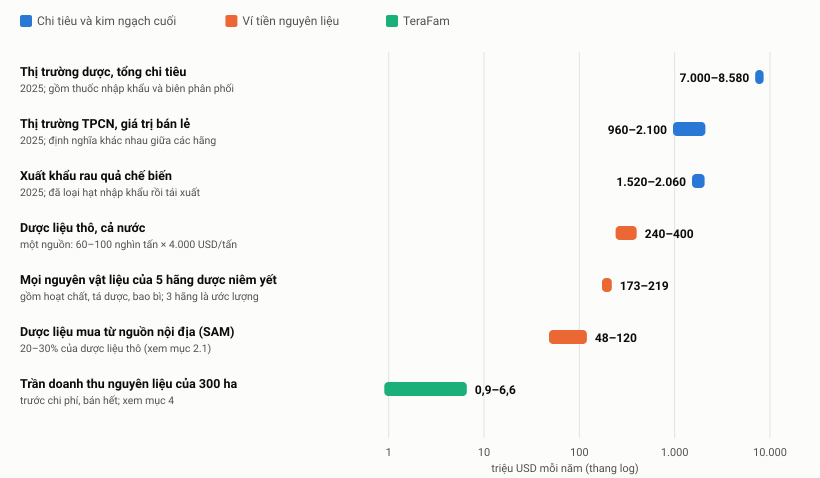
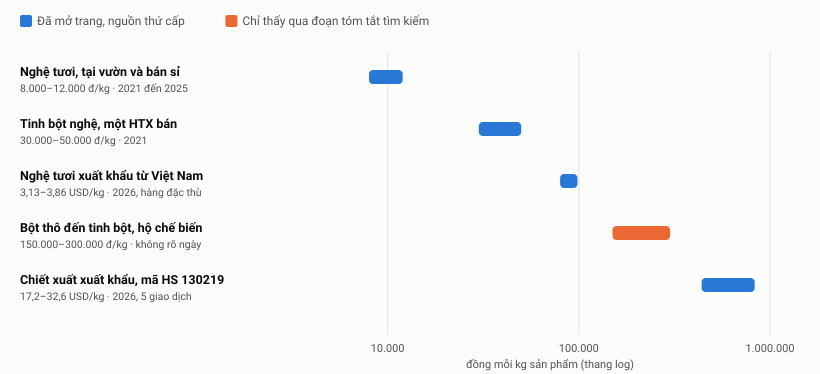
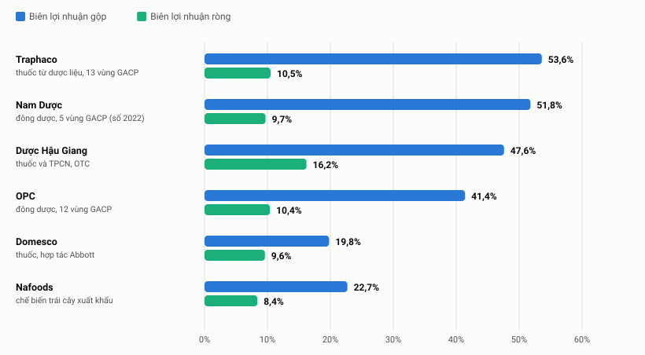
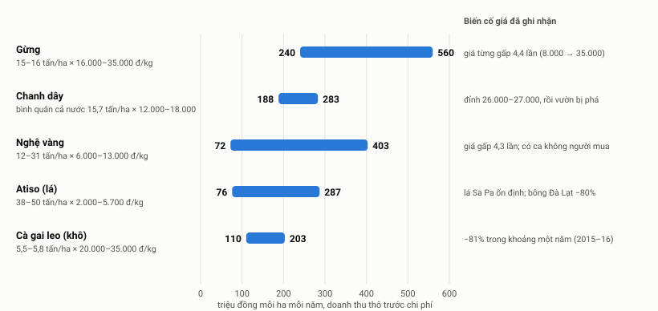
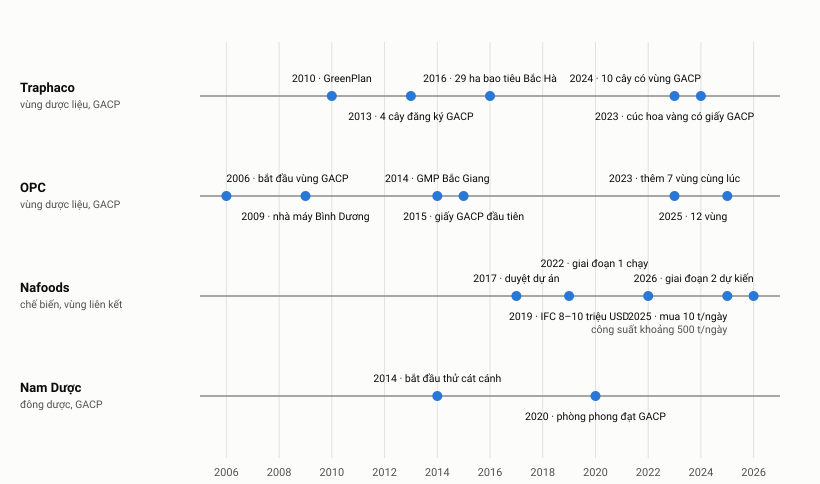

TeraFam: bức tranh thị trường nguyên liệu nông nghiệp, mốc đối sánh và lộ trình phát triển
- Đọc nhanh
- 1. Khung nhìn
- 2. Bức tranh thị trường
- 3. Chuỗi giá trị và biên
- 4. Chọn cây
- 5. Đối sánh
- 6. Bài học thất bại
- 7. Lựa chọn khâu
- 8. Lộ trình
- 9. Kênh và hỗ trợ
- 10. Khoảng trống
- P2. Phạm vi và mẫu
- P3. Bảng tổng quan đối thủ
- P4. Ma trận năng lực
- P5. Giá và mô hình giá
- P6. Bằng chứng từ phía mua
- P7. Pháp lý: điều TeraFam phải đáp ứng và hiện chưa nêu
- P8. TAM · SAM · SOM
- P9. Thử số hãng phân tích từ dưới lên
- P10. Số bị từ chối in
- P11. Chỗ đã sửa khi đối chiếu chéo
- P14. Phương pháp
- CONFIRMED đã mở bản gốc của chính chủ thể: báo cáo thường niên, văn bản nhà nước. Chỉ xác nhận đúng trường dữ liệu đó, không xác nhận điều đó là đúng ngoài đời.
- SECONDARY báo chí, công ty chứng khoán, trang tổng hợp, đã mở và đọc nhưng không phải bản gốc.
- VENDOR doanh nghiệp tự nói về mình (trang web, hồ sơ năng lực, bài quảng bá).
- INFERENCE / ASSUMPTION mình suy ra từ số có nhãn (công thức in kèm) / giả định mình đặt, người đọc được phép đổi.
- UNVERIFIED chỉ thấy qua đoạn tóm tắt của công cụ tìm kiếm, hoặc nguồn bị chặn. REFUSED không truy được nguồn nên không ghi số.
- Mã rút gọn trong bảng dày: C, S, V, I, U là CONFIRMED, SECONDARY, VENDOR, INFERENCE/ASSUMPTION, UNVERIFIED. Ký hiệu năng lực ở phụ lục: C rõ, P một phần hoặc chỉ hãng tự nói, ? chưa đủ bằng chứng. Dấu ? không có nghĩa là không có năng lực.
Đọc nhanh
Câu hỏi. TeraFam (nhà cung ứng nguyên liệu nông nghiệp và nông sản sơ chế, hồ sơ nói 300+ ha ở bốn vùng) nên nhìn thị trường thế nào, so với ai, và đi bước nào để phát triển mạnh hơn. Bản đầu của báo cáo này dùng khung của sản phẩm phần mềm (đối thủ, tính năng, giá niêm yết) và bị đánh giá là sơ sài. Với ngành sản xuất nông nghiệp, thứ cần nhìn là ví tiền của người mua, kinh tế mỗi ha, biên theo từng khâu của chuỗi, vốn và chứng nhận, rồi lộ trình mở rộng theo vụ. Bản này làm lại theo khung đó; phần đối thủ và pháp lý của bản đầu nằm ở phụ lục.
- Thị trường nguyên liệu nhỏ hơn nhiều so với các con số được trích. Thị trường dược 7 đến 8,6 tỷ USD và TPCN 0,96 đến 2,1 tỷ USD là tiền chi cuối cùng của người tiêu dùng. Ví tiền nguyên liệu thật nhỏ hơn hàng chục lần: dược liệu thô cả nước khoảng 240 đến 400 triệu USD mỗi năm theo một nguồn duy nhất, và năm hãng dược niêm yết chi cho mọi nguyên vật liệu (gồm hoạt chất, tá dược, bao bì) khoảng 173 đến 219 triệu USD. Hai hãng thật sự dùng dược liệu nhiều nhất, Traphaco và OPC, có vùng GACP riêng (và vẫn nhập một phần). Hệ quả: thị trường bán dược liệu cho bên thứ ba là nhỏ và phân tán (mục 2).
- Đi cả chuỗi không tự động cho biên cao hơn. Biên gộp thuốc 41 đến 54% so với chế biến nông sản xuất khẩu 22,7%, nhưng chi phí bán hàng và quản lý ăn 41,4% doanh thu của Traphaco; biên ròng các khâu chỉ cách nhau vài điểm (8,4 đến 16,2%). Tự trồng cộng thêm khoảng 2 đến 8 điểm biên gộp so với chỉ làm thành phẩm; giá trị chính là kiểm soát nguồn cung (mục 3).
- Chọn cây là quyết định lớn nhất, và dữ liệu cho thấy bẫy rõ. Mô thức "sốt giá, đổ xô trồng, mất người mua, giá rơi" lặp lại ở ít nhất 6 ca (đinh lăng, cà gai leo, nghệ, atiso, nghệ bọ cạp, mít). Ba ca có tỷ lệ rõ giảm 59 đến 88% (đinh lăng, cà gai leo, bông atiso); nghệ 2023 giảm khoảng 20 đến 40%; nghệ bọ cạp giảm 50% giá giống; mít chưa có tỷ lệ. Ngoại lệ có bằng chứng là lá atiso của Traphaco: giá thấp (2.300 đ/kg), ổn định, có người mua cố định hơn 2.500 tấn mỗi năm. Doanh thu thô mỗi ha chênh gần 8 lần giữa các cây (72 đến 560 triệu đồng) và chi phí mỗi ha gần như không có nguồn, nên chưa ai biết lãi mỗi ha (mục 4).
- Không có "đối thủ trực tiếp" để so, chỉ có mốc theo từng chỉ số. Mục 5 chỉ rõ so với ai ở chỉ số nào. Trong 16 chỉ số vận hành, 6 chỉ số cốt lõi (tỷ lệ lô đạt kiểm nghiệm, giao đúng hẹn, giá thành mỗi kg đạt, hợp đồng nhiều năm, vốn lưu động, tập trung khách) không có mốc công khai nào: TeraFam phải tự xây mốc trong hai đến ba vụ đầu.
- Mở rộng chậm và theo bậc. OPC mất khoảng 9 năm từ "bắt đầu vùng GACP" đến giấy đầu tiên và khoảng 10 năm để đi từ 1 lên 12 vùng; Traphaco đi từ 4 lên 10 cây trong 11 năm; Nafoods xây nhà máy 100.000 tấn/năm khi vùng cung chỉ đủ 10 tấn/ngày so với công suất khoảng 500 tấn/ngày. Quy tắc rút ra: công suất theo sau hợp đồng, không đi trước (mục 5, 6).
- Con đường đề xuất: bốn giai đoạn có cổng, bắt đầu bằng 30 ngày đóng khoảng trống hồ sơ và kiểm chứng độc lập 300 ha, rồi chọn 3 đến 4 cây theo cam kết mua của người mua thật, rồi hợp đồng đầu tiên và giấy GACP đầu tiên, rồi mới mở rộng theo hợp đồng (mục 7, 8).
Độ tin của bản này. Phần lớn con số thị trường là SECONDARY hoặc suy diễn. Chỉ báo cáo thường niên và văn bản nhà nước đọc toàn văn mới được CONFIRMED. Các khoảng trống lớn nhất (chi phí mỗi ha, giá cao chiết, biên gia công, điều kiện mua của người mua) được liệt kê ở mục 10 kèm cách lấp. Chưa có phỏng vấn người mua nào; mọi đánh giá về người mua dựa trên tài liệu công khai.
1. Cách nhìn đúng cho ngành này
Bảy lăng kính thay cho khung phần mềm. Mỗi lăng kính có một câu hỏi, một loại số liệu, và một mục trong báo cáo.
| # | Lăng kính | Câu hỏi | Thay cho gì ở bản đầu | Mục |
|---|---|---|---|---|
| 1 | Ví tiền của người mua | Ai thực sự trả tiền cho nguyên liệu, bao nhiêu, theo điều kiện nào? | "Kích thước thị trường 7 đến 8,6 tỷ USD" | 2 |
| 2 | Chuỗi giá trị và biên theo khâu | Tiền tăng bao nhiêu lần từ vườn tới thành phẩm, và ai giữ phần biên? | Giá niêm yết của từng đối thủ | 3 |
| 3 | Kinh tế mỗi ha, theo từng cây | Cây nào cho doanh thu mỗi ha ổn định, có người mua, hợp đất? | Ma trận tính năng | 4 |
| 4 | Mốc đối sánh theo chỉ số | Ở chỉ số này nên so với doanh nghiệp nào, mốc là bao nhiêu, tin được đến đâu? | Bảng "đối thủ trực tiếp" | 5 |
| 5 | Bài học thất bại có tên | Ai đã làm mô hình tương tự và hỏng ở đâu? | Rủi ro chung chung | 6 |
| 6 | Lựa chọn khâu và vốn | TeraFam nên đứng ở khâu nào trước, cần bao nhiêu vốn, vào lúc nào? | "Định vị 2×2" | 7 |
| 7 | Lộ trình theo vụ và chứng nhận | Làm gì trong 30 ngày, 4 tháng, 1 năm, 2 năm, và cổng nào chặn mở rộng? | "Bước tiếp theo: phỏng vấn 5 khách" | 8, 9 |
2. Bức tranh thị trường: tiền thực sự nằm ở đâu

2.1 Cách đọc hình
- Nhóm xanh dương là tiền chi cuối cùng, không phải thị trường nguyên liệu. Với dược, thuốc sản xuất trong nước chỉ khoảng 46% giá trị SECONDARY, và bốn hãng niêm yết cộng lại chỉ khoảng 0,49 tỷ USD doanh thu, nhỏ hơn 14 đến 18 lần số "7 đến 8,6 tỷ USD" INFERENCE (phụ lục P9).
- Nhóm cam là ví tiền nguyên liệu. Số duy nhất cho dược liệu thô là khoảng 400 triệu USD mỗi năm cho hơn 100.000 tấn, từ lời một diễn giả SECONDARY. Năm hãng niêm yết chi 4.418 đến 5.590 tỷ đồng (173 đến 219 triệu USD) cho mọi nguyên vật liệu năm 2025 INFERENCE. Hai số đọc từ báo cáo thường niên: Traphaco 650,7 tỷ (24,5% doanh thu) và Dược Hậu Giang 2.388,4 tỷ (45,3% doanh thu) CONFIRMED (thuyết minh chi phí theo yếu tố; mình mở lại cả hai, tổng năm dòng khớp tổng chung, còn thứ tự dòng suy từ bố cục bảng). Ba hãng còn lại (OPC, Domesco, Imexpharm) là ước lượng theo tỷ lệ của hai hãng trên ASSUMPTION. Phần dược liệu trong các con số này không được tách trong báo cáo nào.
- Cận trên chắc chắn: dù dược liệu chiếm 30% nguyên vật liệu, ví tiền dược liệu của nhóm niêm yết vẫn dưới khoảng 66 triệu USD mỗi năm INFERENCE (1,7 nghìn tỷ đồng). Phần còn lại của khoảng 400 triệu USD, nếu số đó đúng, nằm ở nhà máy đông dược không niêm yết, TPCN, bệnh viện, xuất khẩu và thị trường lẻ; không có số cho các nhóm này.
- Thanh "dược liệu mua từ nguồn nội địa" (SAM) là 20 đến 30% của dược liệu thô. Cận 20% trùng mục tiêu chính sách 2030 của Quyết định 1976/2026 CONFIRMED; 25 đến 30% là tỷ lệ báo chí nêu cho hiện nay SECONDARY (phụ lục P8).
- Thanh xanh lá là TeraFam: trần doanh thu nguyên liệu của 300 ha khoảng 22 đến 168 tỷ đồng (0,85 đến 6,6 triệu USD) trước chi phí, nếu bán hết (mục 4). So sánh: OPC bán nguyên vật liệu ra ngoài chỉ 9,4 tỷ đồng mỗi năm CONFIRMED. Trần của TeraFam gấp 2,3 đến 18 lần số đó INFERENCE, nghĩa là TeraFam phải tìm người mua ngoài nhóm dược lớn.
2.2 Ai mua, và họ thiếu gì
| Nhóm người mua | Họ là ai, họ lấy nguyên liệu từ đâu | Thiếu nguồn nội địa có giấy tờ? | Mức chắc |
|---|---|---|---|
| A1. Đông dược lớn có vùng riêng | Traphaco: 13 vùng GACP-WHO, doanh thu 2.657 tỷ CONFIRMED. OPC: 12 vùng GACP-WHO, doanh thu 1.123 tỷ CONFIRMED. Cả hai vẫn nhập một phần và công khai rủi ro nguyên liệu nhập | Một phần, ở những cây ngoài danh mục tự trồng (ví dụ nhóm đương quy, xuyên khung: có thể nhập tới 80% SECONDARY). Không có số tấn thiếu | Khá chắc về chiều thiếu (lời chính công ty); không có số lượng |
| A2. Đông dược vừa và nhỏ | Mediplantex (doanh thu 367 tỷ, tự nói khoảng 90% nguyên liệu nhập khẩu), Nam Hà, Hải Dương, Phúc Hưng, Fitopharma… Không có vùng GACP riêng | Thiếu nhiều: dễ bị xếp nhóm thấp khi bán vào bệnh viện | Thấp đến trung bình; một vài nguồn riêng lẻ |
| A3. Bệnh viện công (mua vị thuốc, dược liệu) | Gói nhỏ, ví dụ "Mua dược liệu 2026 lần 1" của một bệnh viện y học cổ truyền: 7,19 tỷ đồng. Nhóm thầu theo tỷ lệ dược liệu GACP và GMP (Thông tư 07/2024, sau đó Thông tư 40/2025) | Thiếu nguồn đạt GACP: cả nước chỉ khoảng 500 ha GACP-WHO SECONDARY | Ví tiền nhỏ, phân tán; người bán là nhà máy hoặc nhà phân phối, không phải nông hộ. Ngưỡng của Thông tư 40/2025 chưa đọc được |
| A4. Nhà máy hóa dược lớn | Dược Hậu Giang (nguyên liệu 2.388 tỷ), Domesco, Imexpharm: chủ yếu hoạt chất nhập khẩu, hơn 200 nhà cung cấp được thẩm định | Không thuộc dược liệu | Ví tiền lớn nhưng không phải thị trường dược liệu |
| B. TPCN, thương hiệu không nhà máy, OEM/ODM, nhãn riêng chuỗi nhà thuốc | Nhiều tên, ít số. Vụ MediPhar/MediUSA (cáo trạng 27/03/2026): doanh thu thực hơn 1.762 tỷ, chỉ kê khai thuế khoảng 363 tỷ SECONDARY. Long Châu 2.517 cửa hàng, Pharmacity 991 cửa hàng UNVERIFIED | Chưa đo được. Áp lực pháp lý có thể tăng nhu cầu nguyên liệu có giấy tờ, nhưng Nghị định 46/2026 đang tạm ngừng | Thấp. Có rủi ro tuân thủ và thanh toán ở một số khách |
| C. Xuất khẩu nông sản sơ chế | Nafoods (sấy và tiêu dùng 326 tỷ, mít sấy giòn chủ yếu gia công ngoài), nhà xuất khẩu quế, gia vị, trái cây sấy | Chưa có chứng cứ thiếu hay dư nguyên liệu thô nội địa cho dược liệu; Trung Quốc chưa mở cửa cho sản phẩm chế biến từ dược liệu Việt Nam (10/2026) | Thấp |
| E. Mỹ phẩm thiên nhiên, đồ uống thảo mộc | Chỉ có tên (ví dụ Cocoon, Dr Thanh), không có số mua | Không kết luận | Không có |
2.3 Ba điều rút ra
- Nhóm duy nhất có chứng cứ trực tiếp về thiếu nguồn nội địa có giấy tờ là đông dược vừa và nhỏ (A2) và bệnh viện (A3) INFERENCE. Cả hai chi nhỏ và không công bố điều kiện mua.
- Nhóm có ví tiền lớn nhất (Dược Hậu Giang, Domesco, Imexpharm) mua chủ yếu hoạt chất. Nhóm thật sự mua dược liệu (Traphaco, OPC) có vùng GACP riêng, dù vẫn nhập một phần. Cầu dược liệu thô mà bên thứ ba bán được vì vậy nhỏ hơn nhiều con số 400 triệu USD nếu hiểu là "ví tiền mở" INFERENCE.
- Không nhóm nào có bằng chứng "dư nguồn nội địa có giấy tờ". Mọi nguồn đều nói thiếu hoặc không nói.
2.4 Điều kiện mua: phần lớn không công bố
- Không công bố: MOQ, thời gian duyệt nhà cung cấp, tần suất đặt hàng, hợp đồng nguyên tắc nhiều năm, ngày công nợ riêng cho dược liệu REFUSED. Ba truy vấn khác nhau chỉ trả về trang pháp lý và trang quảng cáo.
- Đọc được từ báo cáo thường niên: Dược Hậu Giang nói hơn 200 nhà cung cấp được thẩm định và 100% nguyên liệu đầu vào phải qua kiểm nghiệm trước khi vào dây chuyền CONFIRMED (áp dụng cho hoạt chất và tá dược). Domesco: đa dạng hóa nhà cung cấp, đàm phán thời gian giao hàng và giá CONFIRMED.
- Công nợ khác nhau rất xa: Traphaco trả người bán trung bình 187,9 ngày (2024: 208,6) CONFIRMED; Dược Hậu Giang khoảng 37 ngày INFERENCE (365 ÷ vòng quay phải trả 9,9). Cả hai tính trên mọi nhà cung cấp. Với một nhà cung ứng nhỏ, điều khoản thanh toán của khách quyết định vốn lưu động.
- Hai tên dễ nhầm: "CTCP Dược liệu Trung ương 2 (Phytopharma)" thực tế bán tân dược và dụng cụ y tế, không mua dược liệu. Mediplantex phần lớn là tân dược.
3. Chuỗi giá trị: ai giữ biên ở khâu nào
3.1 Giá tăng bao nhiêu từ vườn đến thành phẩm

- Hệ số 36 đến 69 lần giữa nghệ tươi sỉ 12.000 đ/kg và chiết xuất xuất khẩu 17,2 đến 32,6 USD/kg INFERENCE, nhưng không có tỷ lệ tươi sang chiết xuất nên không phải hệ số trên cùng một khối lượng nguyên liệu. Mã HS 130219 là "nhựa và chiết xuất thực vật khác", không riêng curcumin SECONDARY.
- Mâu thuẫn trong chính nguồn: một HTX bán tinh bột nghệ 30.000 đến 50.000 đ/kg, trong khi 15 đến 17,5 kg nghệ tươi ra 1 kg tinh bột và giá thu mua nghệ tươi 7.000 đến 8.000 đ/kg: chỉ riêng nguyên liệu đã 105.000 đến 140.000 đồng. Hai số của cùng một bài không thể cùng đúng INFERENCE. Không chọn số nào.
- Atiso, chuỗi duy nhất tính được đủ: lá tươi 5.700 đ/kg (Lâm Đồng 2023) SECONDARY; một hộp thuốc Boganic 100 viên cần 0,5 kg lá tươi tương đương (50 kg lá mỗi 1 kg cao khô theo hồ sơ đăng ký) nên nguyên liệu lá khoảng 2.850 đồng INFERENCE; giá hộp 80.000 đồng, hệ số khoảng 28 lần; hoặc 369.000 đồng ở một trang khác, hệ số khoảng 129 lần. Hai giá bán lẻ lệch 4,6 lần UNVERIFIED (trang bán thuốc trả 403, chỉ thấy qua tóm tắt tìm kiếm). Hệ số này gồm mọi thứ giữa lá và hộp: chiết xuất, hai thành phần khác, tá dược, bao bì, kênh phân phối.
- Mít sấy: giá xuất khẩu 4,50 đến 11,10 USD/kg (2024) SECONDARY. Tỷ lệ mít tươi sang mít sấy không có nguồn REFUSED; thử với tỷ lệ giả định 10:1 thì nguyên liệu chiếm khoảng 4 đến 9% giá xuất khẩu khi mít tươi 1.000 đ/kg, 11 đến 26% khi 3.000 đ/kg, 35 đến 87% khi 10.000 đ/kg và hơn 100% ở mức cao nhất khi 22.000 đ/kg, nghĩa là biên khâu sấy cực nhạy với giá nguyên liệu ASSUMPTION.
- Không tìm được: giá cao chiết, bột và tỷ lệ quy đổi cho đinh lăng, cà gai leo, sâm; giá sâm Ngọc Linh theo tuổi. Bài VnEconomy 2022 có tiêu đề "vài chục triệu một lạng" nhưng nội dung nêu 160 triệu/kg (tức 6 triệu/lạng).
3.2 Biên theo khâu, từ báo cáo tài chính 2025

- Nguyên nhân biên ròng gần nhau. Traphaco giữ 53,6 đồng sau giá vốn trên mỗi 100 đồng bán, nhưng chi phí bán hàng 28,5% và quản lý 12,9% (tổng 41,4%) ăn gần hết, còn 10,5 đồng lãi ròng CONFIRMED (báo cáo tài chính hợp nhất kiểm toán). Nam Dược tương tự: bán hàng 30,7%, quản lý 9,8% INFERENCE. Phần lớn "biên" của khâu thành phẩm là chi phí kênh (nhà thuốc, bệnh viện, trình dược viên), không phải lợi nhuận.
- Nafoods là mốc thận trọng: biên gộp 22,7% (2024: 28,2%), biên ròng 8,4% (trước phần cổ đông thiểu số), nợ vay gấp 1,62 lần vốn chủ, chi đầu tư gấp 2,3 lần dòng tiền hoạt động, và hai khách hàng lớn nhất chiếm 64,7% phải thu khách hàng (Q1/2026) SECONDARY. Mít sấy giòn của họ chủ yếu gia công thương mại bên ngoài, nên họ không giữ biên khâu sấy.
- Định nghĩa không so được tuyệt đối: biên gộp Imexpharm là 47,5% hay 41,0% tùy nguồn; OPC 41,4% (báo cáo thường niên) hay 47,3% (trang tổng hợp). Mình dùng số của báo cáo thường niên cho OPC và in cả hai cho Imexpharm. Domesco 19,8% khác hẳn nhóm vì cơ cấu hàng hợp tác và hàng nhập; không nên coi là biên chung của khâu thuốc.
3.3 Bốn khâu: biên, vốn, rủi ro, ai đang giữ
| Khâu | Biên điển hình (2025) | Vốn cần | Rủi ro có bằng chứng | Ai đang giữ ở Việt Nam |
|---|---|---|---|---|
| 1. Trồng, thu hái, sơ chế | Không có biên gộp của khâu "trồng thuần" từ báo cáo niêm yết nào REFUSED. Gần nhất: Nafoods 22,7% gộp, 8,4% ròng SECONDARY | Vốn mùa vụ atiso khoảng 300 triệu đ/ha SECONDARY; chi phí lập 1 ha vùng GACP đầy đủ REFUSED; lệ phí GACP 9 triệu đồng/hồ sơ | Giá tươi biến động rất rộng (mít 1.000 đến 22.000 đ/kg; nghệ 3.000 đến 13.000); thu hoạch 10 tháng sau trồng (atiso, nghệ); mất vụ vì thời tiết | Nông hộ, HTX; Traphaco, OPC (vùng GACP riêng); Nafoods (vùng chanh dây, cây giống) |
| 2. Chế biến sơ cấp, sấy, chiết xuất | Nafoods 22,7% (2024: 28,2%). Chiết xuất curcumin, cao chiết, bột: không có báo cáo tách riêng REFUSED | Nhà máy chế biến quả 7,4 đến 50 triệu đồng mỗi tấn công suất năm (Nafoods Tây Nguyên 744 tỷ ÷ 100.000 tấn; Antesco 419 tỷ ÷ 33.600 tấn; Sao Mai 500 tỷ ÷ 10.000 tấn) INFERENCE. Nhà máy chiết xuất GMP riêng REFUSED | Giá nguyên liệu (biên Nafoods giảm 5,5 điểm); nợ vay; phải thu tập trung vào hai khách | Nafoods, Antesco, Sao Mai, TH (nhà máy lớn); HTX nhỏ (lò cao atiso 700 triệu đồng cho 1 tấn/ngày) |
| 3. Thành phẩm thuốc từ dược liệu và TPCN có thương hiệu | Gộp 41 đến 54% (Domesco 19,8%); sau chi phí bán hàng và quản lý, ròng 9,6 đến 16,2% | Nhà máy EU-GMP 700 tỷ (Traphaco, 900 triệu viên/năm) đến 1.495 tỷ (Imexpharm, hoàn vốn tối thiểu 7 năm do công ty tự nói); chủ yếu cho tân dược dạng rắn, không phải dược liệu. Vốn lưu động (tồn kho + phải thu) 31 đến 64% doanh thu; tồn kho 112 đến 220 ngày | Chi phí kênh ăn 41% doanh thu; tồn kho dài ngày; phải thu khoảng 100 ngày (Domesco, OPC) | Dược Hậu Giang, Traphaco, Imexpharm, Domesco, OPC, Nam Dược và hãng nước ngoài |
| 4. OEM/ODM, gia công cho bên thứ ba | Không tìm thấy báo cáo tài chính tách biên gia công REFUSED | Không có số riêng | Không tìm thấy | Dược Hậu Giang coi OEM là trụ cột tăng trưởng; Traphaco CNC bán ngoài 28,3 tỷ; Globalco, Mediphar USA… |
3.4 Nếu TeraFam đi cả chuỗi: tính được gì
Biên gộp hợp nhất = g2 + s × (1 − g2) × g1 g1 = biên gộp khâu thượng nguồn (trồng, chế biến) g2 = biên gộp khâu thành phẩm s = phần giá vốn thành phẩm là nguyên liệu do chính mình cung cấp
| g2 (hãng đối sánh), g1 = 22,7% (Nafoods) | s = 0,2 | s = 0,4 | s = 0,6 | Ví dụ tính (s = 0,4) |
|---|---|---|---|---|
| 41,4% (OPC) | 44,1% | 46,7% | 49,4% | 0,414 + 0,4 × 0,586 × 0,227 = 0,467 |
| 47,6% (Dược Hậu Giang) | 50,0% | 52,4% | 54,7% | 0,476 + 0,4 × 0,524 × 0,227 = 0,524 |
| 53,6% (Traphaco) | 55,7% | 57,8% | 59,9% | 0,536 + 0,4 × 0,464 × 0,227 = 0,578 |
- Đi cả chuỗi cộng thêm khoảng 2 đến 8 điểm biên gộp so với chỉ làm thành phẩm INFERENCE, vì thượng nguồn chỉ chiếm s × (1 − g2) bằng 12 đến 35% giá bán. Giá trị chính của tự trồng là kiểm soát nguồn cung và chất lượng; chính OPC và Traphaco mô tả vùng GACP là để chủ động nguồn cung.
- Biến lớn nhất chưa có số: s. Không hãng niêm yết nào tách tỷ trọng dược liệu trong giá vốn. Cần: giá vốn nguyên liệu trên tổng giá vốn của một sản phẩm cụ thể theo cây đã chọn, giá chuyển nhượng thật, và chi phí kênh của mô hình OEM (nhẹ hơn thương hiệu).
- Nếu thành phẩm vẫn chịu cấu trúc chi phí bán hàng của Traphaco (41,4% doanh thu), biên hợp nhất sau chi phí đó khoảng 14 đến 19% (với g2 của Traphaco) so với biên hoạt động 12,8% của Traphaco đứng một mình INFERENCE. Chỉ để định cỡ, không phải dự báo.
3.5 Vốn và vốn lưu động theo khâu
| Doanh nghiệp (khâu) | (Tồn kho + phải thu) ÷ doanh thu | Tài sản cố định ÷ doanh thu | Số ngày tồn kho | Số ngày phải thu |
|---|---|---|---|---|
| Traphaco (thành phẩm, vùng GACP) | 34,5% | 16,2% | 165 | 41 |
| Dược Hậu Giang (thành phẩm) | 30,6% | 19,2% | 141 | 38 |
| Imexpharm (thành phẩm) | 41,0% | 30,5% | 197 | 49 |
| Domesco (thành phẩm) | 52,0% | 7,1% | 112 | 101 |
| OPC (thành phẩm, 12 vùng GACP) | 63,8% | 17,6% | 220 | 92 |
| Nafoods (chế biến, vùng nguyên liệu) | 27,3% | 35,7% | 49 | 54 |
Tính từ báo cáo tài chính 2025; Traphaco và OPC là CONFIRMED, còn lại SECONDARY (trang tổng hợp). Chưa trừ khoản phải trả nhà cung cấp, nên là vốn lưu động "thô". Số ngày phải thu của Domesco và OPC cao một phần vì dùng tổng phải thu ngắn hạn, gồm khoản trả trước.
- Khâu thành phẩm: vốn cố định nhẹ (7 đến 31% doanh thu) nhưng vốn lưu động nặng (31 đến 64%, tồn kho 112 đến 220 ngày). Khâu chế biến nông sản (Nafoods): ngược lại, vốn lưu động 27% nhưng vốn cố định 36% doanh thu, và nợ vay 1,62 lần vốn chủ để tài trợ INFERENCE.
- Chứng nhận rất rẻ so với nhà máy: lệ phí GACP 9 triệu đồng/hồ sơ và GMP 30 triệu đồng/cơ sở SECONDARY (Thông tư 41/2023/TT-BTC, đọc qua trang luật; hiệu lực hiện nay chưa kiểm). Chi phí thật của chứng nhận là tư vấn, chuẩn bị hồ sơ và nâng cấp cơ sở, và số đó không tìm được REFUSED.
4. Chọn cây gì: kinh tế mỗi ha và bẫy giá
Hồ sơ TeraFam không nêu cây trồng, nên đây là bảng 18 ứng viên để chọn, không phải khuyến nghị cuối. Mọi điểm là INFERENCE với trọng số do mình đặt (cầu 20%, giá ổn định 15%, lợi nhuận mỗi ha 20%, hoàn vốn 10%, ít cạnh tranh 10%, dễ chứng nhận 10%, hợp bốn vùng 15%); ô thiếu dữ liệu chấm 2 và đánh dấu *. Điểm "hợp vùng" là giả định mạnh vì gần như không có nguồn theo vùng.
4.1 Doanh thu thô mỗi ha và biến cố giá

- Trần 300 ha theo từng cây (doanh thu thô nếu bán hết): nghệ 21,6 đến 121 tỷ; gừng 72 đến 168 tỷ; atiso lá 22,8 đến 86 tỷ; cà gai leo 33 đến 61 tỷ; chanh dây 56 đến 85 tỷ đồng INFERENCE. Dải chung 22 đến 168 tỷ (0,85 đến 6,6 triệu USD).
- Chanh dây có một mâu thuẫn mình đã xử lý: bài báo nêu năng suất 35 đến 45 tấn/ha, nhưng 163.000 tấn trên 10.400 ha cả nước là 15,7 tấn/ha SECONDARY INFERENCE. Với 35 đến 45 tấn/ha, doanh thu sẽ là 420 đến 810 triệu; con số 250 đến 350 triệu mà báo cũng nêu khớp với bình quân cả nước. Biểu đồ dùng bình quân cả nước.
- Chưa biết lãi mỗi ha. Chi phí mỗi ha có nguồn chỉ có ba ca rời rạc (nghệ bọ cạp khoảng 300 triệu/ha do một HTX tự nêu; atiso Lâm Đồng 300 triệu/ha trong bài tự mâu thuẫn; gừng hơn 20 triệu/ha chưa kể công, chỉ qua tóm tắt tìm kiếm). Cần hạch toán thử trên chính đất TeraFam.
- Giá 2026 không có cho nghệ, gừng, đinh lăng, cà gai leo, atiso; mốc mới nhất là 2024 đến 2025. Cần gọi trực tiếp các đầu mối thu mua.
4.2 Mô thức bong bóng giá lặp lại
| Cây, năm | Diễn biến | Nguyên nhân theo nguồn | Nhãn |
|---|---|---|---|
| Đinh lăng, 2017–2020 | Giá nguyên liệu đỉnh 27.000 xuống 11.000 đ/kg (−59%); giá giống 40.000–45.000 đ/kg; một nông dân nói khoảng 80% diện tích Hải Hậu bị bỏ. Tây Ninh có một HTX 375 ha đinh lăng (2019), hiện trạng chưa kiểm | Trồng ồ ạt, giá giống tăng vọt, không ai cam kết mua, yêu cầu thu mua khắt khe (đúng 3 tuổi) | SECONDARY (báo VietNamNet 2020) |
| Cà gai leo, 2015–2016 | 80.000–100.000 xuống 15.000–20.000 đ/kg trong khoảng một năm (−81%), sau khi khoảng 60 hộ mở rộng | Mở rộng ồ ạt, không có đầu ra | SECONDARY; tươi hay khô không rõ |
| Nghệ, 2023 | Quảng Ngãi 04/2023 có hàng nhưng không người mua; giá 10.000 xuống 6.000–8.000 đ/kg | Dư cung cục bộ | SECONDARY |
| Atiso Đà Lạt, 1998–2012 | Bông từ 70.000–100.000 xuống 12.000–15.000 đ/kg; diện tích giảm khoảng 75% (200 ha còn 50 ha) | Không còn thương lái | SECONDARY (báo Tuổi Trẻ 2012) |
| Nghệ bọ cạp, 2019–2023 | Giá giống 400.000 xuống 200.000 đ/kg trong 4 năm | Chỉ HTX nêu giá; chưa có người mua độc lập | VENDOR và SECONDARY |
| Chanh dây Gia Lai, 2022–2025; Mít, 2025–2026 | Chanh dây: nông dân mở rộng ồ ạt khi giá tăng, rồi phá vườn thay cà phê, sầu riêng; Gia Lai còn khoảng 5.400 ha, mục tiêu 30.000 ha vào 2030. Mít loại A chỉ 5.000–9.000 đ/kg (05/2026) | Dư cung; Trung Quốc siết cadimi và "Vàng O" (mít) | SECONDARY |
| Ngoại lệ: lá atiso của Traphaco, Sa Pa | Giá thu mua 2.000 lên 2.300 đ/kg (+15% một vụ); cam kết mua toàn bộ; hơn 2.500 tấn lá mỗi năm, khoảng 65 ha, hơn 160 hộ (2023) | Người mua cuối cố định, hợp đồng rõ | SECONDARY (báo Lào Cai 2023) |
Quy luật INFERENCE từ sáu ca đầu: giá cao ban đầu hút diện tích, thiếu hợp đồng bao tiêu, từ vòng thu hoạch thứ hai giá rơi (ba ca có tỷ lệ rõ: 59 đến 88%; các ca khác nhẹ hơn hoặc chưa có tỷ lệ). Ngoại lệ có bằng chứng là cây có người mua cuối cố định. Với TeraFam, điều này đổi câu hỏi "cây nào lãi nhất" thành "cây nào có người mua cam kết trước khi trồng".
4.3 Bảng ứng viên và điểm sơ bộ
Mã rút gọn trong bảng: C CONFIRMED, S SECONDARY, V VENDOR, I INFERENCE hoặc ASSUMPTION, U chỉ thấy qua tóm tắt tìm kiếm. KTT = không tìm thấy (không có nghĩa bằng 0). Nhóm khách (A dược, B TPCN, C xuất khẩu) là I.
| Cây | Khách | Cầu và cung (có số) | Giá tại vườn (năm) | Năng suất và chu kỳ | Chứng nhận, rủi ro, hợp vùng | Điểm |
|---|---|---|---|---|---|---|
| Chanh dây | C | Nhà máy Gia Lai nhận đủ 40% (2024), 50–60% (2025) nguyên liệu S; xuất khẩu tháng 04/2026 khoảng 29 triệu USD U | 12.000–18.000; đỉnh 26.000–27.000 (06/2025) S | 15,7 tấn/ha cả nước I; 4–5 tháng đến thu U | Không áp dụng GACP-WHO I; dư cung khi mở rộng; hợp Đắk Nông, Đồng Nai I. Không thuộc nhóm A, B | 3,67 |
| Nghệ vàng | A, B, C | Sản lượng ước 80.000 tấn (2025); xuất gừng, nghệ và gia vị 22.314 tấn, 34,6 triệu USD S; cầu theo tấn và nhập khẩu KTT | 3.000–13.000 (2020–2024); khoảng 11.000 (11/2024) S | 12–31 tấn/ha/vụ; 280–300 ngày, 1 vụ S | Vùng mẫu GACP 12 ha tại Bắc Hà S; giá gấp 4,3 lần; hợp cả bốn vùng I | 3,55 |
| Diệp hạ châu | A, B | OPC có vùng GACP diệp hạ châu đắng (05/2023) C; nhu cầu theo tấn KTT | KTT | 45–60 ngày/lứa, trồng quanh năm C (sổ tay GACP) | Có sổ tay GACP miễn phí C; điểm có nhiều ô KTT; hợp Đồng Nai, Đắk Nông I | 3,30* |
| Gừng | B, C, A | Sản lượng ước 120.000 tấn (2025) S; nhập khẩu KTT | 8.000–9.000 → 30.000–35.000 (2023) → khoảng 16.000 (2024–25) S | 15–16 tấn/ha (Hướng Hóa 2025) S; 7–11 tháng U | Ít chuẩn GACP; giá gấp 4,4 lần rồi −54%; thối củ | 3,23 |
| Nhân hạt điều | C | Nhập điều thô hơn 2,9 triệu tấn (2025) S | KTT | Cây lâu năm | Phải thắng giá thô nhập khoảng 1.550 USD/tấn I; không phải bài toán 300 ha | 3,08* |
| Đông trùng hạ thảo (nuôi cấy) | B, A | Chỉ có tóm tắt tìm kiếm U | Khô 80–100 triệu/kg (2023) U | 40–50 ngày/chu kỳ U | Không phụ thuộc đất; vốn phòng lạnh lớn; nhiễm tạp, hủy lô. Độ tin thấp nhất bảng | 3,05* |
| Ý dĩ | A, B, C | Thuộc nhóm nhập tới 80% (với đương quy, tam thất, xuyên khung) S | KTT | KTT | Đắk Nông định hướng khoảng 2.000 ha U; kinh tế KTT | 2,93* |
| Nghệ đen, nghệ bọ cạp | A, B | KTT | Bọ cạp 50.000 (05/2023, Đắk Glong) S | 15–20 tấn/ha sau 18–20 tháng S | HTX tự nêu 500–700 triệu/ha, chi phí khoảng 300 triệu V; giống −50% trong 4 năm | 2,93 |
| Atiso | A, B | Traphaco mua hơn 2.500 tấn lá/năm S | Lá 2.300 (2023); bông 12.000–15.000 (2012) S | Khoảng 38–50 tấn/ha; 8 lứa lá mỗi vụ S | Traphaco có GACP; cần độ cao trên 1.000 m: không hợp Tây Ninh, Đồng Nai, Ba Vì I | 2,88 |
| Cà gai leo | A, B | KTT | Khô 20.000–40.000 (HTX bao tiêu) U | 5,5–5,8 tấn khô/ha/năm, 3–4 lứa C (sổ tay) | Có sổ tay GACP; héo xanh vi khuẩn, phải luân canh khác họ cà C; giá −81% | 2,88* |
| Ba kích | A, B | KTT | Tươi 70.000, bóc lõi 120.000 (07/2026, một hộ) S | Khoảng 50 tấn/ha sau 5 năm S | Hoàn vốn 4–5 năm; số liệu từ một hộ | 2,85* |
| Các cây còn lại | Giảo cổ lam 2,60* · hà thủ ô đỏ 2,48* · đinh lăng 2,45 · quế 2,45 (xuất 83.433 tấn, 213,9 triệu USD, 8 tháng 2026; cầu Trung Quốc −37,5%) · mít 2,43 · tam thất 2,35 (cây ôn đới, không hợp bốn vùng) · sâm Ngọc Linh 1,60 (không hợp bốn vùng, "giá ảo", người trồng 7 năm chưa có lãi) | |||||
- Độ nhạy: với trọng số bằng nhau hoặc nặng giá và lợi nhuận, bốn cây đầu vẫn là chanh dây, nghệ vàng, diệp hạ châu, gừng. Nhưng chênh giữa các cây liền kề thường dưới 0,3 điểm, trong sai số của việc chấm, nên điểm chỉ dùng để lọc, không để xếp hạng.
- Cây bị loại khỏi bảng vì không có dữ liệu: kim tiền thảo, ích mẫu, thìa canh, cát cánh, nhân trần, trà hoa vàng, hồi, đương quy; trái cây sấy (xoài, chuối, thơm, dừa) chưa có giá, năng suất, tỷ lệ quy đổi. Đây là ô trống, không phải kết luận "không phù hợp".
4.4 Quy tắc chọn 3 đến 4 cây để thử
- Người mua cam kết trước. Mỗi cây chỉ được vào danh sách thử nếu có ít nhất một thư mua có số lượng và cơ chế giá (như lá atiso của Traphaco). Đây là bài học trực tiếp từ sáu ca bong bóng.
- Có quy trình GACP sẵn. Cà gai leo và diệp hạ châu có sổ tay GACP-WHO trọn bộ miễn phí (HELVETAS và EU 2020, đã đọc toàn văn); OPC đã có vùng diệp hạ châu đắng. Cắt thời gian và rủi ro chuẩn hóa.
- Chu kỳ ngắn trước, dài sau. Cây thu trong dưới một năm (nghệ, diệp hạ châu, cà gai leo) cho phép sai và sửa; cây 3 đến 5 năm (đinh lăng, ba kích, ý dĩ lâu năm) chỉ sau khi có hợp đồng.
- Đa dạng người mua, đa dạng cây. Không để cây nào quá nửa diện tích hay doanh thu: cả sáu ca bong bóng đều là cây đơn lẻ.
- Ứng viên để đưa vào phỏng vấn người mua: nghệ vàng (cầu xuất khẩu và chuỗi curcumin), diệp hạ châu và cà gai leo (nhóm bổ gan, có sổ tay GACP), gừng (chỉ nếu có đầu ra cố định vì biên độ giá lớn), ý dĩ (thuộc nhóm nhập tới 80%, nhưng thiếu dữ liệu kinh tế). Đây là danh sách để kiểm chứng bằng cam kết mua, không phải quyết định cuối INFERENCE.
5. Đối sánh: nên nhìn vào đâu
Không có doanh nghiệp nào giống hệt TeraFam (vùng trồng, nhà máy, R&D và OEM, bán cho bên thứ ba). Vì vậy đối sánh theo chỉ số và theo mô hình, không theo tên.
5.1 Bộ mốc: ai tốt cho chỉ số nào
| Doanh nghiệp | Mô hình | Mốc tốt cho | Chỉ tạm cho | Không dùng cho |
|---|---|---|---|---|
| Traphaco | (i) nhà dược có vùng trồng | Trình tự chứng nhận từng cây; giá thu mua cam kết (lá atiso +15% một vụ); tỷ lệ nguyên liệu trong nước 80 đến 90% (khác định nghĩa) | Tổng số ha, vốn vùng trồng | Doanh thu mỗi ha (số 36.300 ha là kết quả điều tra tài nguyên, 35.000 ha trong đó là chè dây mọc tự nhiên) |
| OPC | (i) | Tốc độ cấp GACP (7 vùng trong 05/2023); bán ngoài 0,84%; biên ròng 10,4%; không nợ vay | Số ha (không công bố) | Kinh tế mỗi ha |
| Nam Dược | (i) | Biên gộp thương hiệu đông dược (51,8%); trình tự thử cây theo vùng sinh thái rồi mới xin GACP; lời về chi phí hạ tầng | Số ha (cát cánh gần 100 ha liên kết) | Doanh thu mỗi ha |
| Dược Hậu Giang | (i) gần "mua nguyên liệu" | Quy mô doanh nghiệp mua nguyên liệu; điều kiện thẩm định nhà cung cấp | Số ha, tỷ lệ tự cung | |
| Nafoods | (ii) chế biến có vùng liên kết | Biên chế biến 22,7 đến 28,2%; vốn dài hạn từ tổ chức phát triển (IFC, FMO, Finnfund, responsAbility); tỷ trọng xuất khẩu khoảng 88%; cảnh báo công suất vượt vùng; nợ vay trên vốn chủ | Số ha liên kết (không có tổng; "10.400 ha" là diện tích chanh dây cả nước) | Cây dược liệu |
| Phúc Sinh | (ii) gom, chế biến, truy xuất | Gọi vốn ESG hơn 1.000 tỷ trong khoảng một năm; 5 năm đến chứng nhận Rainforest Alliance (2009–2014); khoảng 10.000 nông dân được tập huấn | Số ha (một nguồn nêu hơn 20.000 ha U) | Thảo dược |
| Arjuna Natural (Ấn Độ) | (iii) nhà chiết xuất B2B | Biên ròng nhà chiết xuất B2B 14,5 đến 24,1%; nợ/vốn chủ hữu hình 0,13 đến 0,15; xuất khẩu khoảng 80% V; 67% doanh thu từ một sản phẩm (curcumin) | Số ha, tự cung (không có). Doanh thu: 395,7 crore (pháp nhân, C) hay trên 500 crore (nhóm, hãng nói) | |
| Synthite (Ấn Độ) | (iii) chiết xuất gia vị | Nguyên liệu 68% giá vốn; ngay cả nhà chiết xuất hàng đầu cũng chỉ nhắm kiểm soát tới 40% nguyên liệu (số năm 2013 đến 2015) | Doanh thu (số cũ) | Số ha |
| Sami-Sabinsa (Ấn Độ, Mỹ) | (iii) | Bộ chứng nhận người mua TPCN quốc tế đòi (FSSC 22000, NSF GMP, USP GMP) U | Số ha (hai nguồn lệch gấp 2) | Doanh thu |
| Korea Ginseng Corp | (iii) canh tác hợp đồng | 774 ha từ hơn 1.700 hộ (2022) U: một chuỗi vài trăm ha đủ cho một thương hiệu nếu cây giá trị cao | Năng suất 7,8 tấn/ha | Doanh thu mỗi ha |
| Vùng GAP Vân Nam (Trung Quốc) | (iii) | Định cỡ vùng GAP: 39 vùng, khoảng 1.632 ha, 10 loại, trong hai năm từ 10/2023 S | ||
| Betrimex, Vinamit, Vinut, Lavifood | (ii) | Không có dữ liệu mở được REFUSED | ||
Cách đếm ha khác nhau và không cộng được: sở hữu hoặc thuê trực tiếp; diện tích hợp đồng liên kết; diện tích vùng đạt chứng nhận; diện tích điều tra tài nguyên của cả vùng. Chỗ nào không biết cách đếm thì ghi "không rõ". Khi doanh nghiệp công bố "300 ha", người mua sẽ hỏi cách đếm nào.
5.2 Bảng điểm vận hành: 16 chỉ số TeraFam tự đo được
| # | Chỉ số (công thức) | Mốc thấp | Mốc trung bình | Mốc cao | Độ tin |
|---|---|---|---|---|---|
| 1 | Ha đạt GACP ÷ tổng ha vận hành | 0,8% (cả nước, khoảng 500 ÷ 59.000) | 1,8% (Lào Cai, 118,7 ÷ 6.555) | Không có mốc cấp doanh nghiệp | I |
| 2 | Tỷ lệ lô đạt kiểm nghiệm lần đầu | Không có mốc công khai | |||
| 3 | Giao đúng hẹn, đủ lượng | Không có mốc công khai | |||
| 4 | Năng suất so mốc theo cây | Lào Cai 4,6 tấn/ha (hỗn hợp); chanh dây cả nước 15,7 | Atiso Sa Pa khoảng 38 tấn lá tươi/ha | Sâm Hàn 7,8 tấn/ha U; ớt hợp đồng của Synthite 2,2 U | I |
| 5 | Giá thành mỗi kg đạt | Không có mốc. Chỉ có giá thu mua tham chiếu: lá atiso 2.300; đinh lăng 27.000 xuống 11.000; chanh dây 16.000–17.000, đỉnh 26.000–27.000 | |||
| 6 | Doanh thu có hợp đồng nhiều năm | Không có mốc. Định tính: hộ ở Si Ma Cai không muốn bao tiêu 10 năm U | |||
| 7 | Số ngày vốn lưu động (tồn kho + phải thu − phải trả) | Chưa trích; mốc phần tồn kho và phải thu ở mục 3.5 | |||
| 8 | Tỷ trọng top 3 khách | Không có mốc công khai (Arjuna: 67% doanh thu từ một sản phẩm; Nafoods: hai khách chiếm 64,7% phải thu) | |||
| 9a | Biên gộp, chế biến trái cây | 22,7% (Nafoods 2025) | 28,2% (Nafoods 2024) | S | |
| 9b | Biên gộp, thương hiệu thuốc, TPCN | khoảng 42% (Traphaco, 6 tháng 2026) | 50,6% (Nam Dược 2024), 53,6% (Traphaco 2025) | S | |
| 9c | Biên gộp, nguyên liệu thô dược liệu | Không có mốc (không công ty niêm yết nào tách riêng) | |||
| 10 | Biên ròng | 7,0% (Nafoods 2025, sau thiểu số) | 9,6 đến 16,2% (các hãng thuốc) | 24,1% (Arjuna FY24; FY25: 14,5%) | S C |
| 11 | Nợ vay ÷ vốn chủ | 0,00 (OPC, DHG); 0,13 (Arjuna) | 1,06 (Nafoods cuối 2024) | 1,62 (Nafoods cuối 2025) | S |
| 12 | Tỷ lệ nguyên liệu tự cung, vùng kiểm soát | Synthite mục tiêu 40% (hiện thấp hơn) | Traphaco trên 80% nội địa (không phải tự cung) | Traphaco 90% nội địa theo tấn (2017) | V S |
| 13 | Tỷ trọng doanh thu bán ngoài (B2B, xuất khẩu) | Traphaco CNC 2,2% (mục tiêu 2024); OPC 0,84% nguyên liệu | KGC xuất khẩu 15% U | Nafoods 88%; Arjuna khoảng 80% V | S |
| 14 | Nguyên liệu thực mua ÷ công suất nhà máy | Nafoods Tây Nguyên khoảng 2% (10 ÷ 500 tấn/ngày, 06/2025) | Quicornac 40% (2024) | Quicornac 50–60% (2025) | S |
| 15 | Giá thu mua cam kết so với thị trường | Không có mốc chuẩn. Traphaco đinh lăng cao hơn thị trường trên 10% U; lá atiso +300 đ (+15%) | |||
| 16 | Vốn đầu tư ÷ công suất (nguyên liệu-năm) | 7,44 triệu đồng/tấn-năm (Nafoods Tây Nguyên) | Antesco 12,5; Sao Mai 50 (theo thành phẩm, khác loại) | I | |
Đọc bảng này thế nào. Sáu chỉ số cốt lõi (2, 3, 5, 6, 7, 8) không có mốc công khai nào; phần lớn ô còn lại chỉ có một hoặc hai điểm từ các doanh nghiệp khác định nghĩa. Không có mốc nào là chuẩn ngành. TeraFam sẽ phải dựng mốc nội bộ trong hai đến ba vụ đầu và lấy mốc ngoài qua phỏng vấn khách INFERENCE.
5.3 Mất bao lâu để đi từng bước

- Từ 0 đến giấy GACP đầu tiên: OPC khoảng 9 năm (2006 "tiên phong" đến 2015, nếu 2006 là mốc bắt đầu); Nam Dược khoảng 6 năm từ thử nghiệm cát cánh (2014) đến vùng phòng phong (2020), hai cây khác nhau nên chỉ là bậc độ lớn INFERENCE. Cây một vụ mỗi năm cần ít nhất một vụ trước khi có giấy (cúc hoa vàng, cấp 29/12/2023).
- Từ một đến nhiều cây: OPC 1 lên 12 vùng trong khoảng 10 năm, trong đó 7 vùng gộp trong một lần 05/2023; Traphaco 4 lên 10 cây trong 11 năm (khoảng 0,6 đến 0,7 cây mỗi năm). Tốc độ có thể dồn, nhưng không nhanh.
- Từ 300 ha lên 1.000 ha: không doanh nghiệp dược nào công bố chuỗi ha theo năm REFUSED. Điểm tham chiếu ngoài dược: Nafoods lập kế hoạch 3.000 ha liên kết với IFC (2019); KGC 774 ha cho cây 6 năm; Vân Nam khoảng 1.632 ha trong hai năm.
- Từ duyệt dự án đến nhà máy chạy: Nafoods khoảng 5,5 năm (02/2017 đến 08/2022), vốn giai đoạn 1 là 104 tỷ; giai đoạn 2 lên tổng 744 tỷ cho 100.000 tấn/năm.
- Trở ngại theo lời chính doanh nghiệp: niềm tin của nông dân (Traphaco); hạ tầng "rất tốn kém", đất phải sạch kim loại nặng, thử nghiệm thất bại nhiều lần trước khi tìm được vùng hợp (Nam Dược); đất rừng thiếu hướng dẫn thuê (sâm Ngọc Linh, Quảng Nam).
6. Bài học thất bại có tên
| Ca | Điều đã xảy ra (số có nguồn) | Nguyên nhân theo nguồn | Quy tắc cho TeraFam INFERENCE |
|---|---|---|---|
| Nafoods Tây Nguyên và Quicornac, chanh dây | Nhà máy Nafoods công suất gần 500 tấn/ngày, mua khoảng 10 tấn/ngày (06/2025), nghĩa là khoảng 2% công suất; Quicornac nguyên liệu đáp ứng 40% (2024), 50–60% (2025). Cùng lúc Nafoods nâng tổng vốn tổ hợp lên 744 tỷ cho 100.000 tấn/năm. Công ty vẫn có lãi (LNST 2024: 118,1 tỷ) S | Nông dân mở rộng ồ ạt cuối 2022–2023 khi giá tăng, giá rớt rồi phá vườn thay cà phê, sầu riêng | Công suất theo sau hợp đồng. Giữ nông dân khi giá lên và xuống bằng giá sàn, giá thưởng |
| HAGL Agrico | Lỗ lũy kế 8.648 tỷ đồng (09/2024) và hơn 501 triệu USD (06/2026), hai số khác đơn vị và khác thời điểm, chưa đối chiếu; kiểm toán EY nêu không chắc chắn trọng yếu về hoạt động liên tục. Cao su đã trồng 15.192 ha nhưng chỉ khai thác hiệu quả 4.932 ha (32%) S. Cây ăn trái và cao su, không phải dược liệu | Giá hàng hóa sụt sau khi đã đầu tư lớn; vườn chuối lâu năm năng suất kém; khấu hao trên cả diện tích chưa khai thác; vay ngoại tệ | Theo dõi tỷ lệ ha đủ điều kiện thu hoạch trên ha đã trồng; tránh vay ngoại tệ cho cây dài ngày |
| "Trồng sâm trên giấy", Kon Tum | Một tập đoàn nói đã trồng hơn 600 ha trên hơn 7.000 ha "sở hữu"; huyện Tu Mơ Rông xác nhận cả huyện chỉ khoảng 60 ha do dân trồng; xác nhận hành chính bị thu hồi (06/01/2023) S | Khai báo diện tích không khớp thực địa | Người mua sẽ kiểm chứng "300+ ha" tại thực địa. Chuẩn bị bản đồ, quyền sử dụng đất, cây, tuổi, giai đoạn |
| Đinh lăng Nam Định | Giá nguyên liệu đỉnh 27.000 xuống 11.000 đ/kg; khoảng 80% diện tích Hải Hậu bị bỏ (lời một nông dân) S | Trồng ồ ạt; giá giống 40.000–45.000 đ/kg; trung gian ép giá; thu mua khắt khe | Không bán giống và không mở rộng vùng nông hộ khi chưa có hợp đồng mua |
| Trung Tiến, Quảng Ninh | Dự án trồng cây dược liệu và cây ăn quả bị kết luận thanh tra sai phạm đất đai và khoáng sản; hết hạn gia hạn (31/12/2018) mà không triển khai S | Theo kết luận thanh tra của tỉnh: san gạt, đào và bán đất (kể cả xuất hóa đơn cho dự án khác), làm mất lớp đất màu; hết thời hạn gia hạn mà không triển khai. Báo cáo này không suy ra động cơ | Hồ sơ đất và cây trồng sạch từ đầu |
| Không tìm được | Ca đông trùng hạ thảo, chuỗi sâm khác hay "bao tiêu đổ vỡ" dược liệu có tên và số tiền: không tìm được qua công cụ này REFUSED. Đây là "chưa tìm thấy", không phải "không có" |
Phân loại nguyên nhân SECONDARY: đòn bẩy nợ và nợ ngoại tệ khi cây dài ngày chưa cho thu (HAGL); giá nông sản lên xuống làm nông dân bỏ (đinh lăng, chanh dây); công bố diện tích không khớp (Kon Tum); công suất nhà máy vượt vùng nguyên liệu (Nafoods Tây Nguyên); vướng pháp lý đất rừng (sâm Quảng Nam); sai phạm sử dụng đất (Trung Tiến).
7. Lựa chọn khâu cho TeraFam
Hồ sơ nói TeraFam làm cả ba tầng. Câu hỏi thực tế là làm tầng nào trước. Bảng dưới so bốn lựa chọn theo các lăng kính trên; mọi đánh giá là INFERENCE từ dữ liệu ở mục 2 đến 6.
| Lựa chọn | Biên và vốn | Cầu có bằng chứng, người đang giữ | Cổng pháp lý, khớp TeraFam | Rủi ro chính, độ tin |
|---|---|---|---|---|
| A. Nguyên liệu thô, sơ chế, bán theo lô và bao tiêu | Biên: gần nhất 22,7% gộp (Nafoods), ròng 8,4%. Vốn: vùng và sơ chế; vốn lưu động nhẹ hơn thuốc | Cầu: đông dược vừa và nhỏ, bệnh viện thiếu nguồn có giấy tờ. Cạnh tranh: nông hộ, HTX; Traphaco, OPC có vùng riêng | Giấy GACP hoặc cam kết Mẫu 07, hồ sơ lô (Thông tư 32/2025 Điều 12–13), công bố tiêu chuẩn. Dùng trực tiếp 300 ha | Bong bóng giá; phụ thuộc 1 đến 2 người mua. Độ tin trung bình |
| B. Bán thành phẩm trung gian: bột, cao, dịch chiết cho TPCN, OEM, đông dược | Biên: không có số trong nước REFUSED; nhà chiết xuất B2B nước ngoài ròng 14,5 đến 24,1% (một nguồn). Vốn: thiết bị chiết xuất và GMP, không có số | Cầu: TPCN nhiều thương hiệu nhưng không có số mua; rủi ro khách (MediPhar). Cạnh tranh: OPC bán cao chiết; Traphaco CNC; Arjuna ở nước ngoài | Thông tư 28/2025 Điều 4 khoản 16: cơ sở dược liệu, cao, cốm, bột, dịch chiết làm nguyên liệu và bán thành phẩm TPBVSK phải áp dụng GMP tương ứng. Phạm vi GMP của nhà máy SPM chưa biết | Chưa có mốc giá; GMP phạm vi sai là chặn hoàn toàn. Độ tin thấp |
| C. OEM/ODM thành phẩm | Biên: không có số. Giá công khai duy nhất: nang cứng đóng lọ 322 đến 158 đ/viên theo lô, bảng 2022, khách cấp nguyên liệu. Vốn: dùng nhà máy kế thừa | Cầu: Dược Hậu Giang coi OEM là trụ cột tăng trưởng, tức tranh công suất; Nafoods thuê ngoài sấy | GMP đúng dạng bào chế; hồ sơ đăng ký; chất lượng khách (thương hiệu không nhà máy có rủi ro pháp lý) | Cạnh tranh nhà dược lớn trống công suất; khách rủi ro tuân thủ và thanh toán. Độ tin thấp đến trung bình |
| D. Sấy, chế biến trái cây và thảo mộc cho xuất khẩu | Biên: 22,7% gộp, 8,4% ròng, nợ 1,62 lần vốn chủ (Nafoods). Vốn: 7,4 đến 50 triệu đồng mỗi tấn công suất năm | Cầu: Nafoods thuê ngoài sấy mít (326 tỷ nhóm sấy), nhưng mít giá đáy và Trung Quốc siết chuẩn | HACCP, ISO 22000, FSSC; chi phí không có số. Chỉ khớp nếu danh mục cây của TeraFam có quả | Phụ thuộc Trung Quốc; biên sấy nhạy với giá nguyên liệu. Độ tin trung bình |
Thứ tự đề xuất INFERENCE:
- A trước, B ngay sau, trên 2 đến 3 cây có người mua cam kết. A tạo hồ sơ lô, giấy GACP và quan hệ khách; B tăng giá trị và gắn khách chặt hơn, nhưng chỉ sau khi xác nhận phạm vi GMP và thấy ít nhất một thư mua cao chiết hay bột.
- C chỉ khi có ít nhất một khách OEM ký và phạm vi GMP khớp dạng bào chế. Không đầu tư công suất OEM trước khi có hợp đồng.
- D là một cược riêng, chỉ nên xem xét nếu danh mục cây có quả, và theo bài học Nafoods thì nhà máy lớn không đi trước vùng nguyên liệu.
- Không tự mở thương hiệu thành phẩm trong giai đoạn đầu. Phần lớn biên khâu thương hiệu bị chi phí kênh ăn (41% doanh thu ở Traphaco); đi cả chuỗi cộng thêm chỉ 2 đến 8 điểm biên gộp.
8. Lộ trình phát triển mạnh hơn: bốn giai đoạn có cổng
Các cổng dưới đây là tiêu chí đề xuất ASSUMPTION, bám vào các mốc và ca thất bại ở mục 5 và 6; TeraFam đặt ngưỡng cuối cùng. Chi phí chỉ ghi khi có nguồn.
| Giai đoạn | Việc phải làm | Cổng để qua giai đoạn sau | Chi phí biết được, mốc tham chiếu |
|---|---|---|---|
| 0. Đóng khoảng trống hồ sơ 30 ngày |
| Hồ sơ đủ tám mục trên; ha được kiểm chứng; biết chính xác phạm vi GMP | Không cần vốn lớn. Ca Kon Tum (xác nhận 600 ha, thực tế khoảng 60 ha) cho thấy người mua sẽ kiểm |
| 1. Chọn cây và chứng minh có người mua tháng 1 đến 4 |
| Mỗi cây ưu tiên có ít nhất 2 thư mua; lô thử đạt kiểm nghiệm lần đầu; hồ sơ GACP đã nộp | Lệ phí GACP 9 triệu đồng/hồ sơ, thẩm định 30 ngày U; GMP 30 triệu/cơ sở. Hỗ trợ GACP 100% tối đa 200 triệu/dự án của Lào Cai không áp dụng cho bốn tỉnh của TeraFam; chính sách các tỉnh này chưa kiểm |
| 2. Hợp đồng đầu tiên, giấy GACP đầu tiên tháng 4 đến 12 |
| ≥ 2 vụ giao đúng hẹn; ≥ 1 giấy GACP; biên gộp thực đo được theo tầng; không khách nào quá khoảng 50% doanh thu | Thời gian có giấy GACP: không có số; cây một vụ mỗi năm cần ít nhất một vụ (cúc hoa vàng, cấp 29/12/2023). Chi phí tư vấn chứng nhận REFUSED |
| 3. Mở rộng theo hợp đồng năm thứ 2 |
| Tỷ lệ đất trồng mới mỗi vụ không vượt tỷ lệ đã có hợp đồng; nhà máy không chạy dưới mức an toàn vì thiếu nguyên liệu | Nhà máy chế biến quả 7,4 đến 50 triệu đồng mỗi tấn công suất năm; nhà máy EU-GMP thuốc 700 đến 1.495 tỷ (không phải dược liệu) |
8.1 Câu hỏi cho năm cuộc phỏng vấn người mua
Mỗi câu lấp một ô trống ở mục 10. Mình chưa liên hệ ai.
- Anh chị đang mua cây nào, từ ai, bao nhiêu mỗi năm, và một lô điển hình là bao nhiêu kg? (lấp MOQ, tần suất đặt hàng)
- Giá đang mua là bao nhiêu mỗi kg, tươi hay khô, cùng quy cách? Giá có chốt theo vụ không? (lấp giá hiện hành 2026)
- Anh chị yêu cầu giấy tờ gì: GACP, cam kết Mẫu 07, phiếu kiểm nghiệm nào, hồ sơ lô gì? (lấp điều kiện thẩm định)
- Thời gian từ lấy mẫu đến duyệt nhà cung cấp là bao lâu? Có audit tại vườn không? (lấp thời gian duyệt)
- Điều khoản thanh toán: bao nhiêu ngày công nợ? (lấp vốn lưu động)
- Tỷ lệ lô bị trả hoặc loại, và nguyên nhân phổ biến? (lấp chỉ số 2)
- Anh chị có cam kết mua nhiều năm không, và với điều kiện giá thế nào? (lấp chỉ số 6, 15)
- Nếu có nhà cung cấp trong nước có hồ sơ truy xuất từng lô, anh chị trả thêm bao nhiêu so với hàng nhập? (lấp chênh giá GACP so thường, không có nguồn)
8.2 Thí nghiệm rẻ để chứng minh trước khi đầu tư
- Thư mua có số lượng: xin cam kết bằng văn bản từ ít nhất hai người mua cho mỗi cây ưu tiên. Rẻ nhất, và là bài học chung của mọi ca bong bóng.
- Bán thử một lô nhỏ cho người mua đã biết TeraFam, kèm hồ sơ lô đầy đủ, để đo tỷ lệ đạt kiểm nghiệm lần đầu và giá thực nhận.
- Xin báo giá thật từ 3 đến 4 nhà gia công và nhà bán dược liệu cho cùng một gói (cùng cây, cùng lô), để có mốc giá cho tầng bán thành phẩm và OEM mà báo cáo này đang thiếu.
- Bán trước cho một khách đã biết: có người xuống tiền trước khi sản phẩm tồn tại là tín hiệu mạnh nhất.
9. Kênh tiếp cận và hỗ trợ
| Kênh | Thời điểm gần nhất, ai tổ chức | Tới nhóm người mua | Nhãn |
|---|---|---|---|
| Vietnam Medi-Pharm Expo lần 24, khu nguyên liệu dược và hội thảo "đa dụng của dược liệu Việt Nam" | 30/07 đến 01/08/2026, TP.HCM, VINEXAD; khoảng 300 doanh nghiệp, 380 gian | A, B | S (VCCI). Đã qua; tìm kỳ kế tiếp |
| VIETRAMED EXPO (hội chợ quốc gia dược liệu, y dược cổ truyền) | 21 đến 23/11/2024, Cục Quản lý Y, Dược cổ truyền và VIETFAIR; hơn 300 đơn vị. Kỳ 2026: không tìm thấy | A, bệnh viện y học cổ truyền, B | S |
| Hội nghị kết nối giao thương sản phẩm dược liệu | 12 đến 15/11/2025, Hà Nội, Liên minh HTX Việt Nam và Cục Xúc tiến thương mại; gần 50 gian, phía bán nhiều hơn phía mua, không nêu hợp đồng | A, B, C | S |
| Vietfood & Beverage – Propack Vietnam 2026 (VIP Buyer) | 06 đến 08/08/2026, TP.HCM; kỳ Hà Nội 04 đến 07/11/2026 U | C (nông sản sơ chế, trái cây sấy, trà) | S |
| Mạng đấu thầu quốc gia (muasamcong), bán vào bệnh viện | Liên tục; nhà thầu phải là doanh nghiệp đủ điều kiện kinh doanh dược; nhóm GACP và GMP quyết định xếp hạng | A3 (bệnh viện) | S |
| Đăng ký cơ sở với Hải quan Trung Quốc (GACC) | Công văn 16/03/2026; mã có hiệu lực 5 năm | C (sang Trung Quốc) | S U |
| Viện Dược liệu (Bộ Y tế): hợp tác kỹ thuật theo dự án (đã ký với Trường Sinh Group ngày 14/08/2026) | Đối tác kỹ thuật và R&D, không phải người mua | Giống, quy trình trồng, sơ chế | S |
9.1 Chương trình hỗ trợ
- Trung ương: chương trình mục tiêu quốc gia 2026–2035 có nội dung "hỗ trợ phát triển vùng trồng dược liệu quý"; Quyết định 1250/QĐ-TTg (09/07/2026) CONFIRMED (đợt 1). Chương trình của Bộ Y tế theo Quyết định 1102/QĐ-BYT (21/04/2026): mức hỗ trợ và điều kiện chưa đọc được UNVERIFIED.
- Cấp tỉnh: Lào Cai, Nghị quyết 24/2026/NQ-HĐND (hiệu lực 22/08/2026): hỗ trợ tối đa 70% chi phí trồng mới (trần 100 triệu đồng/ha cây thường, 1 tỷ/ha cây quý), 100% chi phí chứng nhận GACP (trần 200 triệu/dự án), tối đa 50% máy sơ chế (trần 10 tỷ/dự án, điều kiện GMP và công suất từ 3 tấn/ngày) S. Đà Nẵng có cơ chế cho sâm Ngọc Linh U. Chính sách của Tây Ninh, Đồng Nai, Đắk Nông, Ba Vì: chưa kiểm, nên là việc đầu tiên cần làm.
- Vốn và tín dụng: Nghị định 260/2026 và 263/2026 (hỗ trợ lãi vay 70% cho doanh nghiệp công nghệ cao, khu nông nghiệp ứng dụng công nghệ cao, hiệu lực 01/07/2026) U; Agribank giảm lãi suất 1 đến 2%/năm từ 08/2026 đến 2028 U; OCOP 2026–2030 U. Chưa biết dự án của TeraFam có thuộc diện không.
10. Khoảng trống bằng chứng và cách lấp
| Khoảng trống | Ảnh hưởng tới quyết định | Cách lấp |
|---|---|---|
| Chi phí đầu tư và chăm sóc mỗi ha có nguồn; lãi mỗi ha | Chọn cây, định giá, thu hồi vốn | Hạch toán thử trên đất TeraFam; đối chiếu với 2 đến 3 HTX |
| Giá tại vườn và giá sỉ năm 2026 | Giá chào, TAM | Phỏng vấn người mua; xin báo giá thật; bản tin giá của Bộ và Sở Nông nghiệp (PDF có trong kết quả tìm, chưa mở) |
| Giá cao chiết, bột; tỷ lệ quy đổi tươi, khô, cao | Lựa chọn B, biên tầng 2 | Xin báo giá nhà bán nguyên liệu; số hải quan theo mã HS; số liệu của chính nhà máy SPM |
| Điều kiện mua của người mua: MOQ, công nợ, thời gian duyệt, hợp đồng nhiều năm | Vốn lưu động, thiết kế hợp đồng | Năm cuộc phỏng vấn ở mục 8.1 |
| Danh sách nhà máy đông dược đạt GMP hiện hành; số cơ sở TPCN hiện hành; quy mô OEM/ODM | Quy mô nhóm A2, B, C | Danh sách GMP của Cục Quản lý Y dược cổ truyền (chưa mở được); cơ sở dữ liệu Cục An toàn thực phẩm |
| Số ha và tỷ lệ tự cung của Traphaco, OPC, Dược Hậu Giang, Nam Dược | Mốc đối sánh mật độ vùng | Báo cáo phát triển bền vững của Traphaco; hỏi trực tiếp tại hội chợ |
| Chi phí tư vấn chứng nhận GACP, HACCP, FSSC, VietGAP, GlobalGAP; thời gian thực tế | Kế hoạch giai đoạn 1 và 2 | Báo giá từ 2 đến 3 tổ chức tư vấn; hỏi OPC, Nam Dược qua hội thảo |
| Ngưỡng GACP và GMP trong Thông tư 40/2025 (đấu thầu bệnh viện) | Khả năng vào kênh bệnh viện | Đọc văn bản gốc (thuvienphapluat.vn chặn truy cập); hỏi nhà thầu dược liệu |
| Phạm vi GMP của nhà máy kế thừa SPM; cây trồng; giấy chứng nhận | Cổng pháp lý của lựa chọn B, C | Giai đoạn 0 |
| Hoa quả sấy: xoài, chuối, thơm, dừa; mít sấy; tỷ lệ quy đổi tươi sang sấy | Lựa chọn D | Một lượt tìm riêng; số hải quan mã HS 0813 |
Nguồn bị chặn hoặc không đọc được, ảnh hưởng tới kết luận: thuvienphapluat.vn và dauthau.asia (403, nên một số văn bản chỉ có bản thứ cấp); báo cáo kiểm toán 2025 của Dược Hậu Giang là PDF ảnh; báo cáo tài chính gốc của Imexpharm, Nam Dược, Nafoods không có đường tải; ITC Trade Map, UN Comtrade (không có số hải quan dược liệu); báo cáo TRAFFIC (401); trang Cục Quản lý Y dược cổ truyền. Báo cáo TeraFam này cũng không có phỏng vấn nào.
Phụ lục
Các phần dưới là nội dung của bản đầu (đối thủ, giá niêm yết, pháp lý, TAM·SAM·SOM) cộng danh sách số bị từ chối in và các chỗ đã sửa, gộp cả hai đợt. Số mục giữ nguyên số của bản đầu và có tiền tố P (P3 là mục 3 của bản đầu).
P2. Phạm vi và mẫu
- Đối tượng: TeraFam theo hồ sơ năng lực tiếng Việt (terafam.com.vn). Toàn bộ nội dung hồ sơ là lời hãng tự nói VENDOR.
- Hồ sơ nói: chuỗi khép kín 6 mắt xích (đất, đầu vào, canh tác, nhà máy, R&D, sản phẩm); 300+ ha ở Tây Ninh, Đồng Nai, Đắk Nông, Ba Vì; nhà máy phân bón vi sinh và thuốc BVTV sinh học; kế thừa năng lực nhà máy dược và TPCN SPM hơn 25 năm; ba tầng cung ứng (nguyên liệu thô, bán thành phẩm, thành phẩm đóng gói); ba mô hình hợp tác (cung ứng theo lô, bao tiêu theo diện tích, OEM/ODM).
- Hồ sơ không nói: giá, tên cây trồng, chứng nhận, công suất, khách hàng, doanh thu.
- Phân khúc khách: (A) dược phẩm và dược liệu, (B) TPCN gồm gia công OEM/ODM, (C) xuất khẩu.
- Địa lý: chỉ Việt Nam. Phân khúc C được hiểu là doanh nghiệp Việt Nam xuất khẩu dược liệu và nông sản sơ chế, không nghiên cứu thị trường nước ngoài ASSUMPTION.
- Loại trừ theo yêu cầu: không nghiên cứu founder, lãnh đạo hay mạng xã hội của đối thủ. Tên người trong nguồn chỉ xuất hiện khi họ phát biểu với tư cách cơ quan hoặc chuyên gia.
- Mẫu đối thủ: 17 đơn vị, chọn bằng truy vấn tiếng Việt theo từng nhóm. Nhóm A: cung ứng dược liệu cho nhà máy dược. Nhóm B: nguyên liệu, bán thành phẩm, gia công TPCN. Nhóm C: nông sản sơ chế và bao tiêu. Chưa phủ được: nhà gia công TPCN lớn có báo cáo tài chính, nhà cung cấp cao chiết, nhà nhập khẩu dược liệu.
- Không phải nghiên cứu khách hàng: chưa có phỏng vấn người mua, chưa có khảo sát. Phần "người mua chê gì" dựa vào phát biểu của cơ quan nhà nước, nhà khoa học và báo chí (mục P6).
- Tỷ giá: 25.500 VND/USD ASSUMPTION (khoảng 25.100 đến 26.000). Chỉ tham chiếu từ đoạn tóm tắt công cụ tìm kiếm UNVERIFIED. Mọi quy đổi VND sang USD dùng tỷ giá này.
P3. Bảng tổng quan đối thủ
Đọc theo hàng. Cột "Sống trong" là kênh nơi sản phẩm và thông tin xuất hiện; đây là thị trường B2B nên không có rating ứng dụng. Số tuyệt đối tính bằng VND trừ khi ghi khác. Chữ in nghiêng trong cột Giá là mô hình giá, không phải giá niêm yết.
| Sản phẩm / đơn vị | Segment | Sống trong | Giá (entry → top) | Funding / quy mô | Ghi chú đắt nhất |
|---|---|---|---|---|---|
| Nhóm A: dược liệu cho nhà máy dược và đông dược (phần lớn là bên mua tự cung) | |||||
| Traphaco (+ Traphaco CNC, Traphacosapa) | A | CONFIRMED niêm yết HOSE; báo cáo thường niên 2025 (113 trang) | REFUSED giá bán nguyên liệu. Thu mua lá atiso tươi 2.300 đ/kg vụ 2023-24, tăng 300 đ so với vụ trước SECONDARY | Doanh thu hợp nhất 2025: 2.657 tỷ (+13%); LNST 278 tỷ CONFIRMED. Vùng GACP-WHO: 13 (toàn nhóm) hoặc 8 (nhà máy CNC), số ha REFUSED | Chủ yếu là người mua. Bán ngoài hệ thống của CNC chỉ 28,3 tỷ CONFIRMED. Con số 36.300 ha "vùng nguyên liệu" ở 24 tỉnh là VENDOR (trang tình huống của một trường đại học), là vùng liên kết, không phải đất sở hữu INFERENCE, và không khớp với 8 đến 13 vùng GACP trong báo cáo thường niên |
| Dược Hậu Giang (DHG) | A, B | CONFIRMED niêm yết HOSE; báo cáo thường niên 2025 | REFUSED giá nguyên liệu và giá OEM | Doanh thu thuần 2025: 5.267 tỷ (+7,8%) CONFIRMED. Nhà nước (SCIC) nắm 43,31% CONFIRMED | Báo cáo ghi OEM là "trụ cột tăng trưởng mới" tận dụng công suất hiện có, cho đối tác trong và ngoài nước CONFIRMED. Vùng trồng duy nhất tìm được là hơn 30 ha ở An Giang, bài báo năm 2014, không rõ còn hay không SECONDARY |
| OPC | A | CONFIRMED niêm yết HOSE; báo cáo thường niên 2025 (82 trang) | Cam kết thu mua 100% kim tiền thảo, giá khô khoảng 12.000 đến 15.000 đ/kg; năng suất trên 11 tấn khô/ha/vụ SECONDARY (báo Nhân Dân 30/12/2023) | Doanh thu thuần 1.122.987 triệu (+15,94%); LNST 116.420 triệu CONFIRMED. 12 vùng GACP-WHO cuối 2025, số ha REFUSED | Bán nguyên vật liệu ra ngoài: 9.418 triệu (2024: 9.899 triệu), khoảng 0,84% doanh thu CONFIRMED INFERENCE. Tự cung là chính, không phải người bán nguyên liệu cạnh tranh |
| Nam Dược | A | SECONDARY báo doanh nghiệp; báo cáo thường niên tải được nhưng phông lỗi, không đọc được | REFUSED giá bao tiêu | Doanh thu 2025 khoảng 928 tỷ (-2%); LNST khoảng 90 tỷ SECONDARY. 5 vùng GACP-WHO (số liệu 2022) SECONDARY | Mô hình "4 nhà", ký hợp đồng bao tiêu; Cát cánh gần 100 ha ở Bắc Hà SECONDARY. Số liệu vùng đã 4 năm tuổi |
| Tuệ Linh | A | VENDOR bài quảng bá trên báo (02/08/2026) | Mua cà gai leo 20.000 đ/kg từ một HTX (2019, không rõ tươi hay khô) SECONDARY | Cà gai leo "hơn 50 ha" ở hai tỉnh; nhà máy chiết xuất "đạt GMP-WHO" VENDOR. Doanh thu REFUSED | Gần nhất với mô hình của TeraFam ở quy mô nhỏ: có vùng, có chiết xuất, có bao tiêu cho hàng trăm hộ. Mọi con số đều do hãng nói |
| Quảng Nam + Trường Sinh (sâm Ngọc Linh) | A | SECONDARY VCCI 19/12/2025; báo NN&MT 10/04/2026 | Một củ 35 năm gần 1 kg đấu giá 725 triệu đồng (lô từ thiện); giá đại trà REFUSED | Hợp đồng 16/12/2025: Trường Sinh dự kiến đầu tư tới 20 triệu USD, mục tiêu 800 ha trong 5 năm VENDOR | Hai bài gán "70 ha, hơn 500.000 cây" cho hai chủ thể khác nhau, không giải được. Kế hoạch, chưa giải ngân |
| Ladophar | A | SECONDARY tạp chí Công Thương 13/10/2023 | Atiso khoảng 5.700 đ/kg, không rõ tươi hay khô | Hợp đồng 27,3 ha, 184 hộ; mục tiêu trên 500 ha vào 2025, không biết có đạt không | Bài báo tự mâu thuẫn: 50,4 tấn/ha × 5.700 đ ≈ 287 triệu/ha, không khớp 466 triệu/ha nêu trong bài. Dữ liệu mỏng |
| Vimedimex, Sao Thái Dương | A, B | UNVERIFIED snippet; trang chủ Sao Thái Dương mở được | REFUSED | Vimedimex: nửa đầu 2025 doanh thu 537 tỷ SECONDARY; Sao Thái Dương REFUSED | Không có bằng chứng trồng hay bao tiêu dược liệu, nên không xếp là đối thủ trực tiếp INFERENCE |
| Nhóm B: nguyên liệu, bán thành phẩm, gia công TPCN | |||||
| Globalco | B | VENDOR bài viết trên website gia công (bảng giá ghi 2022) | Phí gia công, khách tự cấp nguyên liệu: nang cứng đóng lọ 322 → 158 đ/viên khi lô tăng từ 100.000 lên 600.000 viên; gói bột 1.050 → 850 đ/gói VENDOR | Nhà máy tại Long An; chứng nhận GMP không nêu; công suất không nêu. Doanh thu REFUSED | Bảng giá gia công công khai duy nhất tìm được, đã 4 năm tuổi và công thức mẫu "chỉ mang tính tham khảo" |
| Mediphar USA | B | VENDOR website, cập nhật 25/02/2025 | REFUSED (form báo giá). MOQ không nêu | Công suất nang cứng 100 triệu viên/năm, nang mềm 50 triệu VENDOR; hoàn thành trong 30 đến 45 ngày | GMP, ISO 22000, ISO 9001, ISO 13485, HACCP đều do hãng tự nói, chưa xem giấy |
| Gotime Eco, DTP | B | VENDOR website | REFUSED (liên hệ báo giá) | REFUSED | DTP khuyên khách tự tìm nhà cung cấp nguyên liệu có COA, tức không có nguồn dược liệu tự chủ INFERENCE |
| Hồng Lan (điểm tham chiếu giá, không phải nhà máy) | B | VENDOR website bán dược liệu khô | Bảng 2021: đinh lăng rễ tươi 120.000 lẻ / 80.000 sỉ; giảo cổ lam 100.000 / 60.000; cà gai leo (khô) 100.000 / 65.000 đ/kg | REFUSED | Giá sỉ bằng khoảng 55 đến 65% giá lẻ INFERENCE. Bảng 2021, trang 2026 để trống ô giá |
| Nhóm C: xuất khẩu và nông sản sơ chế có bao tiêu | |||||
| Nafoods (NAF) | C | SECONDARY báo cáo ABS 26/06/2026; VENDOR nafoods.com | Không công bố, bán B2B | Doanh thu 2025: 2.064 tỷ (+43,6%); nhóm sấy và tiêu dùng 326 tỷ (16%) SECONDARY. Vốn xanh 160 tỷ từ một quỹ nước ngoài, 09/2025 SECONDARY | ABS ghi mít sấy giòn 2025 "chủ yếu đang gia công thương mại bên ngoài": có nhu cầu gia công sấy thật, và Nafoods là khách tiềm năng hơn là đối thủ ở tầng gia công INFERENCE. Trang chủ ghi 50.000+ ha liên kết nhưng mục vùng trồng ghi 5.000+ ha, lệch 10 lần |
| Vinamit | C | VENDOR website bán lẻ | Xoài cát sấy dẻo 100 g: 61.000 đ; mít sấy chân không 100 g: 46.000 đ. Quy đổi khoảng 440.000 đến 610.000 đ/kg, gồm bao bì và biên bán lẻ INFERENCE | Doanh thu REFUSED | Chỉ là mốc giá lẻ để biết cấp độ, không phải giá nguyên liệu |
| Nông sản Như Ý | C | SECONDARY báo | REFUSED | Diện tích, doanh thu REFUSED | Sầu riêng cấp đông, ngoài dược liệu; dữ liệu mỏng |
| Sản phẩm của mình | |||||
| TeraFam | A, B, C | VENDOR hồ sơ năng lực và terafam.com.vn | Chưa có bảng giá công khai REFUSED | 300+ ha ở 4 vùng VENDOR. Doanh thu, funding, công suất không nêu | Điểm khác duy nhất nhìn thấy trong số đối thủ: một đơn vị nói mình bán cả ba tầng cho bên thứ ba. Điểm yếu: mọi con số đều là lời hãng, và hồ sơ không nêu chứng nhận nào |
P4. Ma trận năng lực
Cùng một thang cho mọi đơn vị. V vùng trồng riêng. N nhà máy chế biến riêng. Ch chứng nhận GACP hoặc GMP công bố. T truy xuất nguồn gốc công bố. R R&D hoặc chuẩn hóa hoạt chất. O OEM/ODM. B mô hình bao tiêu. G bảng giá công khai. C chỉ cho ô có văn bản gốc (báo cáo thường niên) hoặc bảng giá mở được. P cho ô chỉ có nguồn một phía hoặc hãng tự nói. ? là chưa đủ bằng chứng, không phải "không có".
| Đơn vị | V | N | Ch | T | R | O | B | G |
|---|---|---|---|---|---|---|---|---|
| Traphaco (+CNC, Sapa) | C (8 đến 13 vùng, ha ?) | C | C | P | P | P | C | ? |
| Dược Hậu Giang | P (30 ha, 2014) | C | P | P | P | C | ? | ? |
| OPC | C (12 vùng, ha ?) | C | C | ? | P | ? | C (mức báo cáo) | ? |
| Nam Dược | P (5 vùng, 2022) | P | P | ? | ? | ? | P | ? |
| Tuệ Linh | P (50 ha) | P | P | ? | P | ? | P | ? |
| Quảng Nam + Trường Sinh | P (70 ha, chủ thể lệch) | P | P | P | ? | ? | P | ? |
| Ladophar | ? | ? | ? | ? | ? | ? | P | ? |
| Globalco | ? | P | ? | ? | ? | C | ? | C (2022, theo lô) |
| Mediphar USA | ? | P | P | ? | ? | C | ? | ? |
| Gotime Eco | ? | P | P | ? | ? | C | ? | ? |
| Hồng Lan | ? | ? | ? | ? | ? | ? | ? | C (giá lẻ nhỏ) |
| Nafoods | P (5.000 hay 50.000 ha) | P | P | ? | P | ? | P | ? |
| TeraFam (theo hồ sơ) | P (300+ ha, hãng nói) | P | ? | P (hãng nói) | P (hãng nói) | P (hãng nói) | P (hãng nói) | ? |
Đọc bảng thế nào. Mọi ô của TeraFam đều là P hoặc ? vì chưa ô nào có giấy hay văn bản gốc. Trong số đối thủ có báo cáo thường niên, tất cả đều nêu ít nhất chứng nhận và số vùng; TeraFam thì chưa nêu chứng nhận nào. Bảng này không chứng minh chất lượng, và không xếp hạng.
Vì sao không vẽ bản đồ định vị 2×2. Bản đồ Value × Functionality cần một thang tính năng chung và giá năm so sánh được. Thị trường này không có: giá nguyên liệu ngoài hàng lẻ gần như không công bố, và ma trận ở trên còn nhiều ô ?. Nếu đặt các ô ? bằng 0 thì bản đồ chỉ phản ánh ai công bố nhiều chứ không phản ánh ai giỏi, và nếu đặt logo theo cảm tính thì người đọc không cãi được. Khi TeraFam có giá thành và có số liệu chào giá của ít nhất 4 đối thủ ở cùng một gói (ví dụ cùng một dược liệu, cùng lô 1 tấn), bản đồ mới đáng vẽ.
P5. Giá và mô hình giá
Báo cáo này không đề xuất giá cho TeraFam. Dưới đây là giá đã quan sát, kèm ngày và loại giá, rồi các mô hình giá đang được dùng.
5.1 Giá quan sát được (VND/kg trừ khi ghi khác)
| Mặt hàng | Giá | Loại giá và ngày | Nhãn | Chỗ cần cẩn thận |
|---|---|---|---|---|
| Đinh lăng | Lá: lẻ 90.000, sỉ 55.000. Rễ tươi: lẻ 120.000, sỉ 80.000 | Người bán dược liệu nhỏ, 17/12/2021 | VENDOR | Trang 2026 chỉ ghi "từ 120.000". Giá trúng thầu bệnh viện cùng thời kỳ: 181.650 đến 200.025 đ/kg (đã phức chế, có VAT) CONFIRMED là giá ghi trong hồ sơ trúng thầu |
| Giảo cổ lam khô | Lẻ 100.000, sỉ 60.000 | Như trên, 2021 | VENDOR | Trúng thầu 2021: 123.900 đ/kg, đã chế biến, có VAT |
| Cà gai leo | 4.000 (DONAVI, không rõ tươi hay khô); 20.000 (Tuệ Linh mua từ HTX, 2019); lẻ 100.000, sỉ 65.000 (khô, 2021) | Thu mua của hộ và bán lẻ | SECONDARY và VENDOR | Mức thu mua 4.000 đến 20.000 đ/kg so với giá sỉ 65.000 đ/kg: chênh 3 đến 16 lần, có thể do tươi hay khô và khâu trung gian INFERENCE. Trúng thầu 2021: 63.000 đ/kg |
| Kim tiền thảo khô | 12.000 đến 15.000 (OPC thu mua theo báo); lẻ 90.000, sỉ 56.000 (2021) | Bao tiêu, 30/12/2023 | SECONDARY | Lãi 90 triệu đ/ha/vụ là ước tính của báo, không suy ra được từ số trong bài |
| Atiso | Lá tươi thu mua của hộ 2.300 (vụ 2023-24; vụ trước 2.000); khoảng 5.700 (Lâm Đồng, tươi/khô không rõ); lá lẻ từ 60.000; hoa khô từ 380.000 | Bao tiêu và bán lẻ, 2023 đến 2026 | SECONDARY và VENDOR | Chênh tới khoảng 26 lần (2.300 so với 60.000 đ/kg); không thể gộp |
| Nghệ tươi | 15.000 đến 25.000 tại vườn tùy cỡ củ; khô 100.000 đến 150.000; bột 200.000 đến 300.000 | Trang bán nông sản, đăng "27 Th8" năm không hiển thị | SECONDARY | Bảng không có ngày từng dòng |
| Gừng | Gừng trâu tươi 20.000 đến 30.000; gừng sẻ 50.000 đến 60.000; hữu cơ 80.000 đến 90.000 | Giá niêm yết của công ty bán nông sản | VENDOR | Thương lái thu gừng Tết 2025 ở 16.000 |
| Sâm Ngọc Linh | 725 triệu đồng cho một củ 35 năm gần 1 kg | Đấu giá từ thiện, 02/08/2026 | SECONDARY | Không phải giá thị trường. Giá đại trà theo kg REFUSED |
| Xoài sấy (xuất khẩu) | 3,50 đến 9,75 USD/kg (2024); 3,24 đến 12,50 (2023) | Khoảng giá điển hình, không rõ FOB hay sỉ | SECONDARY trang tổng hợp | Dữ liệu giao dịch của trang bị khóa. Giá nhập "dried mango" cùng trang tự mâu thuẫn (19 đến 22 USD/kg năm 2024 so với 0,30 năm 2023) nên không dùng |
| Gừng, nghệ và gia vị khác (xuất khẩu) | 34,6 triệu USD cho 22.314 tấn, khoảng 1.551 USD/tấn | Kỳ không nêu rõ, đăng 03/08/2026 | SECONDARY và INFERENCE (34,6 triệu ÷ 22.314 tấn) | Nhóm gộp "và gia vị khác", không phải giá riêng của gừng. Hai bài khác ghi 61 triệu USD cả năm: lệch, chưa giải |
| Cao chiết, bột dược liệu theo tỷ lệ chiết | REFUSED | Không có bảng giá nào mở được | Đây là tầng 2 của TeraFam và là chỗ trống lớn nhất về giá | |
| Giá nhập dược liệu từ Trung Quốc, Ấn Độ | REFUSED | Không tìm được giá đơn vị theo mặt hàng có ngày | Không so được giá nội địa với giá nhập |
Mốc giá để hiểu độ rộng. Giá bán buôn dược liệu khô của người bán nhỏ nằm trong khoảng 55.000 đến 80.000 đ/kg (2021), tương đương 2.200 đến 3.100 USD/tấn INFERENCE (÷ 25.500). Con số ngầm định trong "400 triệu USD cho hơn 100.000 tấn" là 4.000 USD/tấn, tức khoảng 102.000 đ/kg INFERENCE: cao hơn mọi giá sỉ đã quan sát, nên có khả năng gồm cả dược liệu giá cao như sâm, tam thất, hoặc giá nhập tại cửa khẩu.
5.2 Chín mô hình giá đang được dùng (ví dụ, chưa phải đề xuất)
- Giá theo lô, bậc thang theo số lượng. Globalco: nang cứng đóng lọ 322 / 163 / 158 đ/viên ở lô 100.000 / 300.000 / 600.000 viên (gia công, không gồm nguyên liệu, giá 2022). Hồng Lan: hai cột sỉ và lẻ.
- Bao tiêu toàn bộ, giá chốt theo vụ và thông báo hằng năm. Traphacosapa: lá atiso 2.300 đ/kg vụ 2023-24, tăng 300 đ so với vụ trước.
- Bao tiêu toàn bộ, giá theo thị trường lúc thu hoạch. Ladophar.
- Bao tiêu kèm hỗ trợ đầu vào không thu trước. DONAVI: giống, phân, kỹ thuật, giá 4.000 đ/kg cà gai leo.
- Cam kết thu mua 100% kèm ước lợi nhuận theo ha cho nông dân. OPC: kim tiền thảo 12.000 đến 15.000 đ/kg, trên 11 tấn khô/ha/vụ.
- Mua bán kèm đầu tư vùng trồng, giá không công bố. Quảng Nam và Trường Sinh.
- Phí gia công theo viên hoặc gói, kèm MOQ theo kg hoặc số viên. Globalco. Phí theo lô, phí công thức, phí đăng ký: không đơn vị nào công bố số.
- Cao chiết và bột theo tỷ lệ chiết. Không có nguồn công khai.
- Chi phí đất trong mô hình HTX. Thuê dài hạn khoảng 1 tạ thóc/sào (2019); thuê đất liền vùng 5,4 triệu đ/ha/năm (2021). Cũ, chỉ cho thấy cỡ.
5.3 Mô hình nào khớp với ba mô hình hợp tác của TeraFam
- Cung ứng theo lô khớp với mô hình 1 và 7: báo giá theo kg, bậc thang theo MOQ, ghi rõ tươi hay khô, tách riêng phí kiểm nghiệm.
- Bao tiêu theo diện tích khớp với mô hình 2, 3, 5: cần quyết ai chịu rủi ro giá. Bằng chứng ở mục P6 cho thấy hợp đồng dài khiến nông dân ngại ký và giá rơi làm bỏ diện tích (đinh lăng Hải Hậu bỏ tới 80%, UNVERIFIED).
- OEM/ODM khớp với mô hình 7: phí gia công theo viên hoặc gói, bậc thang theo lô, tách khỏi nguyên liệu như Globalco. Các nhà máy có GMP đều "liên hệ báo giá", nên chưa có mốc so.
- Để ra số cho cả ba, TeraFam cần cung cấp: giá thành theo kg của từng cây, năng suất thực, tỷ lệ hao hụt sau sơ chế, chi phí kiểm nghiệm theo lô, công suất nhà máy.
P6. Bằng chứng từ phía mua
Giới hạn. Gần như không tìm được lời phàn nàn công khai, có tên, của một nhà máy dược hay thương hiệu TPCN về một nhà cung cấp cụ thể. Không có review kiểu G2, không có khảo sát mua hàng. Phần dưới là phát biểu của cơ quan nhà nước, nhà khoa học và báo chí, nên tất cả ở mức gián tiếp. Phần lớn đã mở trang nhưng chỉ ở mức SECONDARY.
6.1 Bằng chứng ủng hộ rủi ro nguồn cung mà TeraFam nêu
- Công văn 2054/YDCT-QLD (03/08/2026) nêu "vẫn còn tình trạng kinh doanh, lưu thông dược liệu không rõ nguồn gốc, xuất xứ; dược liệu chưa bảo đảm chất lượng", chủ yếu ở bán lẻ; yêu cầu tăng lấy mẫu và lưu hồ sơ truy xuất từng dược liệu CONFIRMED (mình không có số đếm từ văn bản này, vì văn bản không có).
- Cục Quản lý Y dược cổ truyền công bố 20 cơ sở dược liệu vi phạm năm 2025, chủ yếu về chỉ tiêu dược điển (định lượng, chất chiết, soi bột, độ ẩm, tạp chất) và thiếu hồ sơ lô, hạn dùng, giấy phép nhập khẩu SECONDARY (Viettimes 23/06/2025).
- Báo Đầu tư 06/08/2026 nêu "không ít mẫu" có tồn dư thuốc BVTV, kim loại nặng, nấm mốc, không kèm tỷ lệ SECONDARY. Không tìm được tỷ lệ kim loại nặng hay dư lượng ở cấp quốc gia: đây là khoảng trống bằng chứng chứ không phải bằng chứng là thấp.
- Hệ thống kiểm nghiệm nhà nước năm 2025: hơn 41.500 mẫu, 260 mẫu không đạt, trong đó dược liệu 25 trên hơn 1.670 mẫu UNVERIFIED (một bài báo, Viettimes 06/04/2026; trang này render bằng JavaScript nên mình không mở lại được, số chưa kiểm chứng ở bản gốc).
- Báo Pháp luật 2017 trích số liệu 2012: gần 400 mẫu, 60% không đạt UNVERIFIED (14 năm tuổi, không có báo cáo gốc). Không dùng làm thực trạng.
6.2 Bằng chứng nghịch: người mua không hẳn đang bị lừa hàng loạt
- 25 trên 1.670 mẫu dược liệu không đạt là 1,5% INFERENCE (25 ÷ 1.670). Bài báo cùng ghi "3,1%". Hai số không khớp; mình in cả hai và nêu mâu thuẫn. Tỷ lệ chung của cả hệ thống là 0,63% (260 ÷ 41.500).
- Giải thích khả dĩ: mẫu lấy chủ yếu tại cơ sở y tế và đấu thầu, kiểm theo chỉ tiêu dược điển, ít kiểm kim loại nặng và dư lượng INFERENCE, chưa kiểm chứng.
- Vấn đề lớn hơn là hồ sơ chứng từ và rủi ro pháp lý cho bên mua, không chỉ chất lượng vật lý.
- Dược điển Việt Nam có 330 chuyên luận dược liệu, trong đó 82 không có giới hạn định lượng hoạt chất và 173 chủ yếu dựa vào hàm lượng chiết hoặc tinh dầu UNVERIFIED (một bài báo). Nếu đúng, chuẩn "đạt" còn lỏng với nhiều vị, và bên mua hạng cao có thể đặt tiêu chuẩn cơ sở cao hơn (Thông tư 32/2025, Điều 7 cho phép công bố chỉ tiêu cao hơn dược điển) INFERENCE.
6.3 Nỗi đau cụ thể của người mua
| Nỗi đau | Bằng chứng tìm được | Mức |
|---|---|---|
| Thiếu hồ sơ | Công văn 2054/2026 và danh sách vi phạm 2025 nêu thiếu số lô, hạn dùng, số đăng ký, giấy phép nhập khẩu. Ước chỉ khoảng 1.400 trên 60.000 tấn nhập có nguồn gốc rõ (2017) | Công văn: CONFIRMED. Còn lại UNVERIFIED |
| Chất lượng thất thường | "Chất lượng không đồng đều" được nêu là một lý do dược liệu nội địa khó cạnh tranh (báo SGGP 2024, là ý kiến của bài báo) | SECONDARY |
| Giá biến động | Không có quy định kê khai giá dược liệu; báo giá chênh 2 đến 5 lần giữa các nhà cung cấp trong khảo sát của một tờ báo năm 2016; chi phí nguyên liệu tăng là thách thức lớn nhất trong khảo sát Vietnam Report 2023 | SECONDARY, cũ |
| Giao không đúng hẹn | Không tìm thấy nguồn nói trực tiếp. Cục nói nguồn cung "phụ thuộc thời vụ và nhập khẩu" (2016) | UNVERIFIED, gián tiếp |
| MOQ cao | Không tìm thấy bất kỳ nguồn nào về MOQ trong dược liệu Việt Nam | Khoảng trống |
| Thiếu R&D hỗ trợ | Thiếu công nghệ chiết xuất lõi, tiêu chuẩn không thống nhất dọc chuỗi (một giáo sư nêu 2023). Không có khảo sát khách nói "thiếu R&D từ nhà cung ứng" | UNVERIFIED, gián tiếp |
| Nguồn cung bị tranh mua | Sâm Ngọc Linh, tam thất bị doanh nghiệp Trung Quốc thu mua gần hết, theo một giám đốc công ty dược | UNVERIFIED snippet |
6.4 Chuỗi khép kín: đã chạy được và đã thất bại ở đâu
- Chạy được, nhưng do người dùng cuối tự làm. Traphaco kể mất khoảng 14 năm, và trở ngại lớn nhất ban đầu "không nằm ở kỹ thuật" mà là niềm tin của nông dân SECONDARY. OPC làm tương tự với 12 vùng GACP CONFIRMED. Cả Traphaco, OPC lẫn TH Group đều là nhà sản xuất dùng nguyên liệu của chính mình.
- Không tìm được ví dụ bên thứ ba. Không có bằng chứng về một đơn vị "vùng trồng + nhà máy + OEM" chuyên bán cho người khác và đã chạy được ở Việt Nam. TeraFam, nếu thật, là một mô hình chưa có tiền lệ nhìn thấy được trong dữ liệu này INFERENCE.
- Rủi ro cấu trúc. Hợp đồng bao tiêu 10 năm khiến nông dân ngại ký, ngân hàng ngại cho vay vùng dược liệu, cát cánh Si Ma Cai khoảng 37 ha khó bán SECONDARY (VnEconomy 31/07/2023). Đinh lăng Hải Hậu bỏ tới 80% diện tích khi giá giảm UNVERIFIED (snippet, không rõ năm). "Liên kết rồi bỏ chạy" ở Đắk Lắk là bài về nông nghiệp nói chung UNVERIFIED.
- Không tìm được thất bại có tên. Không tìm thấy doanh nghiệp dược cụ thể đã đầu tư vùng trồng cộng nhà máy rồi rút lui. Vì vậy không kết luận "mô hình khép kín thất bại ở Việt Nam"; chỉ có rủi ro cấu trúc ở đầu ra, vốn, hợp đồng dài và niềm tin.
P7. Pháp lý: điều TeraFam phải đáp ứng và hiện chưa nêu
| Yêu cầu | Nội dung (nguồn) | Hồ sơ TeraFam |
|---|---|---|
| Giấy tờ nguồn gốc dược liệu | Thông tư 32/2025/TT-BYT, hiệu lực 01/07/2025, thay Thông tư 38/2021. Điều 12: hàng nhập cần C/O từng lô; hàng trong nước đạt GACP cần giấy chứng nhận GACP; hàng trong nước không GACP cần cam kết địa điểm nuôi trồng, thu hái theo Mẫu 07 CONFIRMED (bản PDF để trống số và ngày ký, số hiệu lấy từ cổng tỉnh) | Không nêu. Hồ sơ nói truy xuất ngược về vùng trồng và vụ thu hoạch VENDOR. Truy xuất nội bộ khác với giấy GACP bên mua cần xuất trình khi bị thanh tra INFERENCE |
| Lưu hồ sơ truy xuất | Điều 13.1: mỗi lần nhập và xuất phải lưu tài liệu nguồn gốc, thông tin bên bán và bên mua, tên khoa học, bộ phận dùng, số lượng, ngày CONFIRMED | Khớp về hướng với nhật ký đồng ruộng TeraFam mô tả; chưa có bằng chứng thực thi |
| Công bố tiêu chuẩn chất lượng, phiếu kiểm nghiệm | Điều 7 đến 9: công bố tiêu chuẩn nếu chưa có trong dược điển hoặc nếu muốn chỉ tiêu cao hơn; hồ sơ kèm phiếu kiểm nghiệm; kiểm theo dược điển CONFIRMED | Không nêu |
| GACP | Thủ tục đánh giá GACP: 30 ngày, lệ phí 9.000.000 đ/hồ sơ, thực hiện ở UBND cấp tỉnh theo Thông tư 21/2026 và Quyết định 1803/QĐ-BYT SECONDARY (trang luatvietnam; ngày hiệu lực của Thông tư 21/2026 chỉ suy ra). GACP hiện chưa bắt buộc để bán dược liệu thô, vì hàng không GACP đi bằng Mẫu 07. Nhưng đấu thầu bệnh viện xếp nhóm theo tỷ lệ dược liệu GACP và GMP UNVERIFIED | Không nêu. Nếu chưa có GACP thì TeraFam thuộc nhóm "cam kết Mẫu 07" INFERENCE |
| GMP cho dược liệu và bán thành phẩm dược liệu | Thông tư 28/2025/TT-BYT, hiệu lực 01/07/2025. Cơ sở sản xuất dược liệu, cao, cốm, bột, dịch chiết được phép sản xuất nguyên liệu và bán thành phẩm TPBVSK với dạng bào chế đã được chứng nhận, và phải áp dụng GMP tương ứng. Hồ sơ phạm vi "chỉ dược liệu, thuốc cổ truyền" nộp Cục Quản lý Y dược cổ truyền CONFIRMED nội dung văn bản; số hiệu chưa đối chiếu bản ký | Hồ sơ nói kế thừa nhà máy dược và TPCN SPM 25+ năm nhưng không nêu giấy chứng nhận nào, nên không biết nhà máy nào có phạm vi nào VENDOR |
| Giấy chứng nhận đủ điều kiện kinh doanh dược | Nghị định 163/2025/NĐ-CP hiệu lực 01/07/2025: cơ sở sản xuất dược liệu có vị trí người chịu trách nhiệm chuyên môn, gồm cả hợp tác xã. Mình mới đọc phần đầu của bản Công báo (đến khoảng Điều 69). Loại giấy dành riêng cho người chỉ bán dược liệu nuôi trồng chưa xác nhận được UNVERIFIED | Không nêu. Nên hỏi luật sư hoặc Sở Y tế |
| Nhánh TPCN | Nghị định 15/2018 áp dụng GMP cho cơ sở sản xuất TPBVSK, không có quy định riêng về nguồn gốc nguyên liệu dược liệu. Nghị định 46/2026 bị tạm ngừng từ 06/04/2026 nên Nghị định 15/2018 vẫn áp dụng UNVERIFIED (nguồn thứ cấp, văn bản bị chặn) | Luật chạm vào bên mua (nhà máy TPBVSK) nhiều hơn bên bán nguyên liệu; bên mua vẫn có thể ép giấy tờ qua kiểm nghiệm đầu vào INFERENCE |
| Ranh giới dược liệu và thực phẩm | Công văn 319/YDCT-QLD (2020): mặt hàng không thuộc phụ lục III Nghị định 15/2018 coi là dược liệu do Bộ Y tế quản lý; từng có công ty khai dược liệu như thực phẩm UNVERIFIED | Hồ sơ không nêu cây nào, nên không xác định được TeraFam đứng bên nào |
| Thuốc BVTV sinh học của chính TeraFam | Mình chưa kiểm xem sản phẩm có đăng ký lưu hành riêng hay chưa | Có thể là điểm mạnh để kiểm soát dư lượng, nhưng chỉ thành bằng chứng khi có phiếu kiểm nghiệm dư lượng từng lô INFERENCE |
Chưa đọc được nguyên văn: Luật 44/2024/QH15, phần sau của Nghị định 163/2025, Thông tư 21/2026, Thông tư 40/2025, Dược điển Việt Nam (giới hạn kim loại nặng và dư lượng). Nguồn bị chặn: thuvienphapluat.vn (403 kể cả qua đường vòng), hoatieu.vn (403), vbpl.moj.gov.vn (không phân giải), vietlaw.quochoi.vn (trang rỗng).
P8. TAM · SAM · SOM
Chuỗi tính viết thành phép nhân với giả định in ra. Số của hãng phân tích là kích thước của thị trường; chuỗi này mới là kích thước của TeraFam. Người đọc được phép đổi giả định, không đổi được phép tính. Chỉ phân khúc A (dược liệu thô) đủ đầu vào để tính cả chuỗi. Phân khúc B và C chỉ tính được từng phần và nói rõ chỗ thiếu.
8.1 Phân khúc A: dược liệu thô cho thuốc và TPCN
TAM = nhu cầu (tấn/năm) × giá ngầm định (USD/tấn) SAM = TAM × tỷ lệ nguồn nội địa (phần TeraFam thật sự cạnh tranh được) SOM = SAM × tỷ lệ TeraFam giành được trong 12 tháng
| Bước | Thấp | Cơ sở | Cao | Nhãn và giả định |
|---|---|---|---|---|
| Nhu cầu dược liệu (nghìn tấn/năm) | 60 | 80 | 100 | SECONDARY ba nguồn lệch nhau: 60.000 đến 80.000 (báo VietnamPlus 09/2026), 80.000 đến 100.000 (VnEconomy 12/2025), hơn 100.000 (một diễn giả, 08/2025). Bộ Y tế đang "rà soát đánh giá" nhu cầu, tức chưa có số chính thức. Chưa rõ tươi hay khô |
| × Giá ngầm định (USD/tấn) | 4.000 | 4.000 | 4.000 | INFERENCE 400 triệu USD ÷ 100.000 tấn, lấy từ một diễn giả (08/2025). Một nguồn, một lần |
| TAM (triệu USD/năm) | 240 | 320 | 400 | INFERENCE. Tương đương 6.120 / 8.160 / 10.200 tỷ đồng. Số 400 triệu USD của diễn giả là đầu mút cao |
| × Tỷ lệ nguồn nội địa | 20% | 27,5% | 30% | SECONDARY báo chí nêu nội địa đáp ứng 20 đến 30% (VietnamPlus 2026, một nhà nghiên cứu 2025). Cận thấp 20% là mục tiêu chính sách chứ không phải tỷ lệ hiện tại (trùng mục tiêu tự chủ 2030 của Quyết định 1976/2026) CONFIRMED. Cơ sở là điểm giữa của 25 đến 30% ASSUMPTION |
| SAM (triệu USD/năm) | 48 | 88 | 120 | INFERENCE. Tương đương 1.224 / 2.244 / 3.060 tỷ đồng |
| × Tỷ lệ TeraFam giành được | 0,1% | 0,5% | 1% | ASSUMPTION cho 12 tháng đầu, khi chưa có chứng nhận, chưa có khách, chưa có giá chào. Nên thay bằng số đo được từ danh sách khách thực tế |
| SOM (triệu USD/năm) | 0,05 | 0,44 | 1,2 | INFERENCE. Cơ sở 0,44 triệu USD ÷ 4.000 USD/tấn = 110 tấn |
Kiểm tra SOM bằng sức chứa 300 ha
Trần doanh thu = 300 ha × năng suất (tấn/ha) × giá bán (đ/kg)
| Đầu vào | Thấp | Cơ sở | Cao | Nhãn |
|---|---|---|---|---|
| Năng suất (tấn/ha/vụ) | 2 | 4 | 5 | ASSUMPTION. Mốc tham chiếu duy nhất: Lào Cai 30.180 tấn ÷ 6.555 ha ≈ 4,6 tấn/ha, hỗn hợp loài, tươi hay khô không rõ, nhiều diện tích dưới tán rừng SECONDARY. Hồ sơ TeraFam không nêu cây trồng nên đây không phải ước lượng sản lượng của họ |
| Giá bán (đ/kg) | 12.000 | 30.000 | 65.000 | ASSUMPTION bám vào mục P5: mức thu mua của OPC, trung vị của khoảng sỉ, mức sỉ giảo cổ lam và cà gai leo 2021 |
| Trần doanh thu | 7,2 tỷ (0,28 triệu USD) | 36 tỷ (1,41 triệu USD) | 97,5 tỷ (3,82 triệu USD) | INFERENCE. Giả định cả 300 ha là dược liệu bán được hết, một vụ mỗi năm |
SOM ở trên (0,05 / 0,44 / 1,2 triệu USD) nằm trong các trần này (0,28 / 1,41 / 3,82), nên không vô lý về mặt sức chứa. Hai chuỗi dùng hai mốc giá khác nhau (4.000 USD/tấn so với khoảng 470 đến 2.550 USD/tấn của giá sỉ), nên chỉ so để thấy cỡ, không cộng.
Độ nhạy quan trọng nhất: giá ngầm định
Nếu thay 4.000 USD/tấn bằng giá sỉ cơ sở 30.000 đ/kg (≈ 1.176 USD/tấn): TAM cơ sở = 80.000 tấn × 30.000 đ/kg = 2.400 tỷ đồng ≈ 94 triệu USD, giảm 3,4 lần so với 320 triệu. SAM cơ sở với 27,5% còn khoảng 26 triệu USD. Kết luận về độ lớn tuyệt đối vì vậy phụ thuộc mạnh vào việc hàng của TeraFam là loại giá nào, và hồ sơ chưa nói.
8.2 Phân khúc B: TPCN và gia công OEM/ODM
- Thị trường TPCN Việt Nam năm 2025: thấp 0,96 tỷ USD (IMARC, bản "dietary supplements", SECONDARY: đọc trên trang của hãng phân tích) / cơ sở 1,42 tỷ USD (Nexdigm, Ken Research, UNVERIFIED snippet) / cao 2,1 tỷ USD (IMARC "nutraceuticals", UNVERIFIED). Định nghĩa khác nhau; đây là giá trị bán lẻ, không phải thị trường nguyên liệu.
- Tỷ trọng nguyên liệu dược liệu trong giá trị bán lẻ: không có nguồn. Không ước lượng được, mình không điền số để lấp bảng.
- Độ nhạy: mỗi 1% tỷ trọng nguyên liệu tương đương khoảng 9,6 đến 21 triệu USD mỗi năm INFERENCE (1% × 0,96 đến 2,1 tỷ USD). Cần số thật từ giá thành của vài thương hiệu TPCN để thay vào.
- Số cơ sở, số sản phẩm hiện hành và quy mô gia công OEM/ODM: không tìm được. Số mới nhất là 3.108 cơ sở và 11.127 sản phẩm của năm 2021 SECONDARY, không dùng làm hiện hành.
- Một mốc định tính về nhu cầu gia công: Nafoods thuê ngoài sản xuất mít sấy giòn năm 2025 SECONDARY, nhưng tỷ lệ và giá gia công không có.
8.3 Phân khúc C: xuất khẩu của Việt Nam
- Rau quả xuất khẩu 2025: 8,6 tỷ USD CONFIRMED (Báo cáo Xuất nhập khẩu Việt Nam 2025 của Bộ Công Thương, tổng hợp từ Hải quan, đọc toàn văn); Vinafruit ước 8,5 tỷ SECONDARY.
- Rau quả chế biến 2025: 2,06 tỷ USD (+42,1%) SECONDARY (báo Thời báo Tài chính dẫn Hải quan). Trong đó hạt dẻ cười (361 triệu) và hạnh nhân (183 triệu), tổng 544 triệu USD, là loại Việt Nam không trồng và báo cáo Bộ Công Thương cũng liệt kê chúng ở nhóm nhập khẩu; rất có thể là tái xuất INFERENCE. Loại ra còn khoảng 1,52 tỷ USD (2,06 − 0,544).
- Trái cây sấy của Việt Nam: không có số hải quan (mã HS 0813 chưa truy được). Mốc duy nhất là nhóm sấy và tiêu dùng của Nafoods: 326 tỷ đồng ≈ 12,8 triệu USD SECONDARY INFERENCE (326 ÷ 25.500), bằng khoảng 0,6 đến 0,8% của 2,06 và 1,52 tỷ USD. Đây chỉ là một công ty, nhưng gợi ý sấy là một ngách nhỏ trong rau quả chế biến INFERENCE.
- Dược liệu xuất khẩu: không có số hải quan sạch. 312 triệu USD năm 2025 là xuất khẩu thuốc và nguyên liệu làm thuốc của 67 doanh nghiệp, trong đó khoảng 75% là doanh nghiệp FDI SECONDARY; không phải dược liệu.
- Rào cản: đến 10/2026 Trung Quốc chưa mở cửa cho bất kỳ sản phẩm chế biến nào từ dược liệu Việt Nam SECONDARY (Văn phòng SPS Việt Nam, dẫn lại).
- SAM và SOM của C: không ước lượng được, vì thiếu tỷ trọng sản phẩm sấy, bột, cao trong xuất khẩu và chưa biết TeraFam có sản phẩm xuất khẩu nào.
P9. Thử số hãng phân tích từ dưới lên
| Phép thử | Tính | Kết luận |
|---|---|---|
| Thị trường dược 7,0 đến 8,58 tỷ USD (Cục Quản lý Dược, Fortune, IMARC) | Cộng doanh thu 2025 của bốn nhà sản xuất niêm yết: DHG 5.266,9 + IMP 2.441 + DMC 2.067 + TRA 2.657 = 12.431,9 tỷ đồng ≈ 487,5 triệu USD CONFIRMED từng số, INFERENCE tổng. 7.000 ÷ 487,5 = 14,4 lần; 8.580 ÷ 487,5 = 17,6 lần | Lệch hơn một bậc độ lớn. Thuốc sản xuất trong nước chỉ khoảng 46% giá trị (Cục Quản lý Dược, 12/2025), nhập thuốc thành phẩm gần 4,4 tỷ USD năm 2024. Đây là tổng chi tiêu, không phải TAM nguyên liệu, và mình không dùng nó để tính TAM |
| Dược liệu thô 400 triệu USD/năm | Không công ty niêm yết nào công bố mua dược liệu thô để cộng từ dưới lên | Không thử lại được. Số này chỉ có một nguồn là lời một diễn giả |
| TPCN 0,96 đến 2,1 tỷ USD | Bán online năm 2024 trên 4 sàn lớn: 7.700 tỷ đồng ≈ 302 triệu USD SECONDARY (Metric, qua nhadautu). 302 ÷ 960 = 31%; 302 ÷ 1.420 = 21% | Hợp lý về cỡ. Doanh thu TPCN của Traphaco, DHG, DMC không công bố tách riêng nên không cộng được |
| "Thị trường dược 7 tỷ USD" | Cùng một con số "7 tỷ USD" được dùng cho năm 2022 (bài 10/2023), 2025 (bài 12/2025) và tháng 08/2026 (Bộ trưởng Y tế) | Hoặc có một năm gắn sai, hoặc thị trường đứng yên theo USD. Chưa giải được; không dùng để suy tăng trưởng |
P10. Số bị từ chối in
Những con số lan truyền mà mình không truy được nguồn gốc. Mục này có mặt để người đọc biết con số nào không nên trích lại.
- "Việt Nam nhập 70%, 80%, 80 đến 90%, trên 90% dược liệu". Bốn số, ít nhất ba khái niệm khác nhau: dược liệu, nguyên liệu bào chế thuốc (gồm hoạt chất hóa dược) và nguyên liệu thuốc nói chung. Dược Hậu Giang và OPC viết "80 đến 90%" cho nguyên liệu làm thuốc, chủ yếu hoạt chất. Số "gần 70%" cho dược liệu chỉ truy được tới câu "theo thống kê của ngành Y tế" của một bài báo, không có văn bản. Mình in "70 đến 80% theo lượng" với nhãn SECONDARY, không in như số chính thức.
- "Nội địa đáp ứng 15%, 20 đến 30%, 25%" nhu cầu và "thu hoạch 10.000 tấn, nhập 40.000 tấn": nhiều năm khác nhau (2016 đến 2025), không gán nguồn gốc, không khớp nhau (10.000 + 40.000 = 50.000 tấn, trong khi nhu cầu nêu 60.000 đến 100.000).
- "60% mẫu dược liệu không đạt" (2012, gần 400 mẫu): trích qua bài báo 2017, không có báo cáo gốc, 14 năm tuổi.
- "17 cơ sở dược liệu vi phạm tháng 4/2025": không tìm được danh sách hay công văn gốc; con số 17 còn bị dùng cho một vụ khác (thanh tra dược phẩm và mỹ phẩm).
- "Tỷ lệ dược liệu không đạt 3,1% năm 2025": không khớp 25 ÷ 1.670 = 1,5% trong cùng bài. In cả hai và nêu mâu thuẫn.
- "Traphaco 36.300 ha, 24 tỉnh, 10 dược liệu GACP": chỉ có từ một trang tình huống của trường đại học, là diện tích liên kết, và không khớp với số vùng GACP trong báo cáo thường niên 2025 (8 đến 13 vùng). Chỉ in số vùng từ báo cáo thường niên.
- "Thuốc đông dược chiếm X% thị trường dược": không có nguồn nào kèm số.
- "334 triệu USD nhập khẩu dược liệu 8 tháng 2023": biểu đồ ngay dưới trong cùng báo cáo ghi đó là "nguyên phụ liệu dược phẩm" (các năm 2017 đến 2022 là 381 đến 461 triệu USD, và 334 là "9T2023"). Rất có thể không phải dược liệu.
- "Hàng tỷ USD nhập nguyên liệu mỗi năm": lời cử tri gửi Bộ Y tế, không khớp chuỗi 0,38 đến 0,46 tỷ USD/năm ở trên.
- "Xuất khẩu dược liệu vài trăm triệu USD/năm" và "1 tỷ USD dược liệu xuất khẩu năm 2030": phần đầu bài ghi dược liệu, phần thân ghi thuốc sản xuất trong nước; không gán nguồn.
- "Quyết định 1954/QĐ-TTg ngày 08/10/2026 đặt mục tiêu 20% nguyên liệu sản xuất trong nước": chỉ từ một bài báo, không có văn bản. Có thể là nhầm với mục tiêu 20% nguyên liệu hóa dược của một quyết định khác INFERENCE. Không dùng.
- "Hơn 600 hợp tác xã dược liệu trên khoảng 3.000 ha": chỉ thấy trong tóm tắt tìm kiếm.
- Số "562,9 tỷ USD" thị trường TPCN Việt Nam 2021 trên một trang tư vấn: lớn hơn GDP, không rõ đơn vị.
P10 (tiếp). Số bị từ chối in thêm ở đợt 2
- Lãi mỗi ha lan truyền, không có bảng chi phí: đinh lăng "520 đến 580 triệu đồng/ha/năm" và "hơn 360 triệu đồng mỗi 1.000 m2 trong 3 năm" (tức 3,6 tỷ/ha); sâm Ngọc Linh "40 tỷ đồng/ha trong 5 năm"; cà gai leo "300 triệu đồng/ha/năm" (mâu thuẫn với giá 4.000 đ/kg trong cùng bài); atiso Lâm Đồng: lợi nhuận "trên 217 triệu đồng/ha" và "80 đến 90 triệu mỗi 1.000 m2" (tức 800 đến 900 triệu/ha) trong cùng một bài, lệch 3,7 đến 4,1 lần. Không dùng.
- "10.400 ha, 163.000 tấn chanh dây": là diện tích và sản lượng cả nước, không phải của Nafoods. Đọc nhầm sẽ gán cho Nafoods.
- "Vài chục triệu đồng một lạng sâm Ngọc Linh": tiêu đề một bài báo; nội dung bài nêu 160 triệu đồng/kg, tức khoảng 6 triệu đồng/lạng.
- Giá bán lẻ Boganic 100 viên: 80.000 hay 369.000 đồng tùy trang; mít sấy Vinamit: 161.333 hay 440.000 đồng/kg. Lệch 2,7 đến 4,6 lần, không chọn.
- Tinh bột nghệ bán 30.000 đến 50.000 đ/kg: thấp hơn chi phí nguyên liệu tươi suy ra từ chính bài đó (105.000 đến 140.000 đồng). Không dùng.
- Tỷ lệ nội địa của Traphaco "trên 80%" và "90%": hai số cùng chỉ nguyên liệu nội địa, khác năm và khác định nghĩa (số tấn hay số loại); không phải tỷ lệ tự cung.
- Số lợi nhuận ròng của trang tổng hợp stockanalysis: luôn thấp hơn lợi nhuận sau thuế trong báo cáo tài chính gốc (Traphaco 216,8 so với 278,4 tỷ). Không dùng trang này cho lợi nhuận.
- Lợi nhuận Nafoods 2025: 145,3, 145,6 hay 173,3 tỷ tùy bảng (sau hay trước cổ đông thiểu số, bảng nguồn lệch dòng). Biểu đồ dùng 8,4% (173,3 ÷ 2.063,7) cho biên ròng trước thiểu số và 7,0% sau thiểu số.
- Doanh thu Arjuna Natural: trên 500 crore (nhóm, hãng nói) so với 395,7 crore (pháp nhân, xếp hạng tín nhiệm). IFC ghi cả 8 và 10 triệu USD cho cùng khoản. Số hộ liên kết của Nafoods: 2.000 hoặc hơn 2.500.
- Lỗ lũy kế HAGL Agrico: 8.648 tỷ đồng (09/2024), 9.762 tỷ (Q3/2025, UNVERIFIED), hơn 501 triệu USD (06/2026); khác đơn vị, khác thời điểm, chưa đối chiếu với báo cáo tài chính.
- "Quyết định 1954/QĐ-TTg": xem P10 ở trên.
P11. Chỗ đã sửa khi đối chiếu chéo
- Tỷ lệ nhập khẩu và diện tích GACP. Một agent gắn CONFIRMED, agent kia gắn UNVERIFIED. Mình mở lại hai trang. VnEconomy 09/12/2025 đúng là viết "theo thống kê của ngành Y tế, nhu cầu 80.000 đến 100.000 tấn mỗi năm, gần 70% phải nhập khẩu", và số 60 đến 70 vùng GACP là lời một giám đốc trung tâm của Viện Dược liệu. VnBusiness 27/08/2025 có câu "hơn 60 vùng trồng đạt GACP-WHO với diện tích trên 500 ha" nhưng không gán người nói. Cả hai đều là báo chí, nên hạ về SECONDARY. Hệ quả: 500 ha GACP cả nước chỉ có một nguồn và không nên dùng như số chính thức.
- Quyết định 1976/QĐ-TTg. Có hai văn bản cùng số hiệu: ngày 30/10/2013 (quy hoạch dược liệu, đặt 80% vào 2030) và ngày 13/10/2026 (chiến lược y học cổ truyền, tự chủ tối thiểu 20% vào 2030 và 25% vào 2035). Mình tải lại bản PDF 2026 và xác nhận hai mốc 20% và 25%. Cẩn thận khi trích: số hiệu trùng nhau nhưng nội dung khác hẳn.
- OPC bán nguyên liệu 0,8%. Mình mở lại báo cáo thường niên OPC 2025: dòng "doanh thu bán nguyên vật liệu" là 9.899 triệu (2024) và 9.418 triệu (2025); 9.418 ÷ 1.124.546 = 0,84%. Khớp với kết quả của agent.
- Quyết định "1954/QĐ-TTg". Một agent trích từ báo, không agent nào khác thấy; chuyển vào mục P10.
- Mâu thuẫn mình không giải được: Viettimes 3,1% so với 1,5%; lợi nhuận Nafoods 145,3 so với 145,6 so với 173,3 tỷ (lệch dòng trong bảng nguồn); lợi nhuận trước thuế của DHG 940,99 so với 1.020,4 tỷ; hai bài gán "70 ha sâm" cho hai chủ thể khác nhau. Không số nào dùng để kết luận.
- Lỗi của chính mình. Trong brief mình đã viết tiêu chí thứ chín là "chiều ngược lại" mà không có nghĩa rõ; agent hỏi lại, mình bỏ tiêu chí đó. Bộ nhãn của các nhánh bằng chứng cũng được đổi lại cho thống nhất khi tổng hợp.
P11 (tiếp). Chỗ đã sửa khi đối chiếu ở đợt 2
- Chanh dây. Một bài nêu năng suất 35 đến 45 tấn/ha; 163.000 tấn trên 10.400 ha cả nước chỉ là 15,7 tấn/ha. Con số doanh thu 250 đến 350 triệu đồng/ha mà báo nêu khớp với bình quân cả nước, không khớp với 35 đến 45 tấn. Biểu đồ dùng bình quân.
- Nguyên vật liệu của Traphaco và Dược Hậu Giang. Một agent báo 650,7 và 2.388,4 tỷ đồng. Mình mở lại hai báo cáo thường niên: trích văn bản tách bố cục bảng, và 2.388,4 xuất hiện cạnh nhãn "chi phí dịch vụ mua ngoài" dù dòng đúng phải là nguyên liệu, vật liệu (dòng đầu của năm dòng). Tổng năm dòng khớp tổng chung (Dược Hậu Giang 4.513,0; Traphaco 1.947,6 tỷ) nên giữ, nhưng thứ tự dòng là suy từ bố cục.
- "36.300 ha vùng nguyên liệu của Traphaco". Phân rã trên chính trang đó cho thấy 35.000 ha là chè dây, khớp kết quả điều tra tài nguyên 2009–2011, không phải diện tích Traphaco trồng hay kiểm soát. Không dùng làm quy mô.
- Báo cáo OPC. Dòng "doanh thu bán nguyên vật liệu" đọc lại: 9.418 triệu đồng (2025), 9.899 triệu (2024), tức 0,84% doanh thu.
- Công cụ tìm kiếm sai. Một lần tìm trả lời "không có Thông tư 32/2025 về thuốc cổ truyền"; văn bản gốc trên cổng chính phủ đã được đọc và có thật.
- Nhãn CONFIRMED với báo chí. Một số bài báo được agent gắn CONFIRMED trong khi chỉ đọc bản tóm tắt tự động; mình hạ về SECONDARY (xem thêm P11 mục 1 ở trên).
- Mâu thuẫn chưa giải: lợi nhuận gộp OPC 464,9 so với 531,5 tỷ và Imexpharm 47,5% so với 41,0% (định nghĩa khác nhau); lợi nhuận trước thuế Dược Hậu Giang 940,99 so với 1.020,4 tỷ; hai bài gán cùng "70 ha sâm" cho hai chủ thể khác nhau.
P14. Phương pháp
- Ba nhánh bằng chứng chạy song song với cùng phạm vi và ngày cắt: (1) đối thủ và giá, (2) nỗi đau người mua, chứng cứ vi phạm và pháp lý, (3) quy mô thị trường và dòng vốn. Mỗi nhánh nhận cùng một bộ nhãn và yêu cầu ghi số bị từ chối in.
- Phiên chính tổng hợp, tự tính lại mọi phép toán (TAM, SAM, SOM, tỷ giá, tỷ lệ), và mở lại các nguồn có thể đảo kết luận: Quyết định 1976/2026, báo cáo thường niên OPC 2025, hai trang báo về tỷ lệ nhập và diện tích GACP. Bản tóm tắt của agent là đầu mối, không phải bằng chứng.
- Báo chí đã mở trang nhưng chỉ đọc bản tóm tắt tự động của trang đó được gắn SECONDARY, không gắn CONFIRMED. Chỉ văn bản PDF gốc được đọc toàn văn mới được CONFIRMED.
- Báo cáo không dùng số của hãng phân tích làm TAM; không đề xuất giá; không suy "không có bằng chứng" thành "không có". Mọi ô ? trong ma trận là chưa đủ bằng chứng.
- Tự chấm (1 đến 5): phạm vi 4; độ phủ bằng chứng 3 (nhiều khoảng trống ở mục P12); bằng chứng nghịch 4; độ chính xác phép tính 4 (đã tính lại bằng chương trình và tay); độ hữu ích cho quyết định 3 (kết luận về định vị đủ mạnh, kết luận về giá còn thiếu dữ liệu từ chính TeraFam).
- Chưa làm: phỏng vấn người mua, xin báo giá thật, đọc nguyên văn các văn bản pháp luật bị chặn, bản đồ định vị 2×2. Ngày truy cập tất cả nguồn: 2026-11-13.